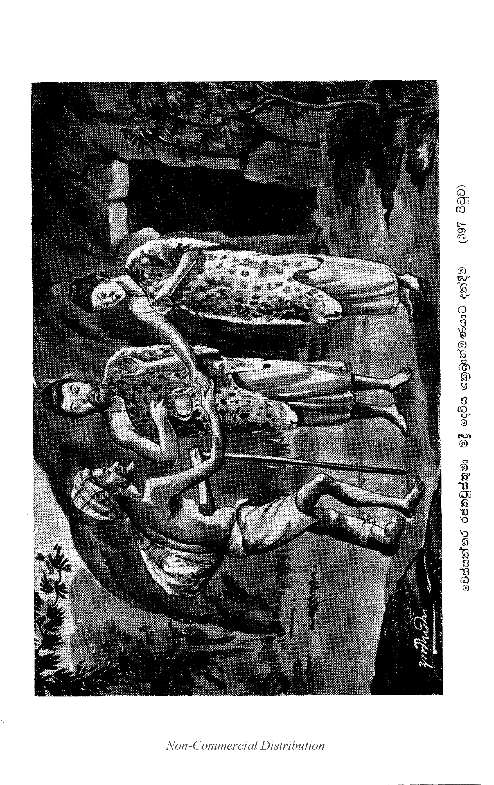

පුත්රදාන ප්රශ්නය
“ස්වාමීනි, නාගසෙනයන් වහන්ස, සියලු ම බොධිසත්වවරයෝ පුත්රදාරාවන් දන් දෙන්නාහු ද? නොහොත් වෙස්සන්තර නම් රජ්ජුරුවන් විසින් ම පුත්රදාරාවෝ දන් දෙන ලද්දෝ[1] දැ” යි විචාළෝ ය. “මහරජානෙනි, සියලු ම බොධිසත්වවරයෝ පුත්රදාරාවන් දන් දෙති. වෙස්සන්තර රජ්ජුරුවන් විසින් ම පුත්රදාරාවන් දන් දෙන ලද්දේ නො වෙ” යි කියා වදාළසේක. “කිමෙක් ද, ස්වාමීන් වහන්ස, ඒ බොධිසත්වවරයෝ ඒ අඹුදරුවන්ගේ සම්මතයෙන් දෙන්නාහු දැ?” යි විචාළෝ ය. “මහරජානෙනි, ඒ වෙස්සන්තර රජ්ජුරුවන්ගේ භාර්යාව[2] ‘මැනැවැ’ වි තිවා අනුදන්නා ලද්දී ය. ලඳබොළඳ වූ කුමාරවරු වනාහි ලදරු බැවින් ‘අම්ම, පියානෙනි’ යි යනාදීන් කියා බිණූහ. ඉදින් ඒ කුමාරවරු ද අර්ථ වශයෙන් දන්නාහු වූ නම්, ඔහුත් විලාප නො කියන්නාහු ය. ‘යහපතැ’ යි කියා ඒ කුමාරවරුත් අනුමොදන් වන්නාහු ය” යි වදාළසේක. “ස්වාමීනි, නාගසෙනයන් වහන්ස, ඒ වෙස්සන්තර නම් බුද්ධාංකුරයානෝ තමහට දා වූ ප්රියපුත්රයන් ජූජක නම් බමුණුහට දාසමෙහෙවර පිණිස දුන්නාහු ය යි යන යම් ක්රියාවක් බොධිසත්වයන් විසින් කරණ ලද ද, ඒ ක්රියාව ඉතා දුෂ්කර වන්නේ ය. තවද, ඒ වෙස්සන්තර නම් බුද්ධාංකුරයානෝ තමාගෙ ඉතා ලදරු වූ තරුණ වූ ප්රිය වූ ඖරසපුත්රයන් මහවැලකින් බැඳ දෙමින් ඒ ජූජක නම් බමුණා විසින් එම වැලින් අත් මර්දනය කොට වෙළන්නවුන් දැක උපෙක්ෂක[3] වූසේකැ යි යන මේ කාරණයක් ඇද්ද, මේ ඒ දෙවෙනි වූ කාරණය ද දුෂ්කරයටත් වඩා දුෂ්කර වන්නේ ය. තවද ඒ වෙස්සන්තර නම් බුද්ධාංකුරයානෝ ස්වකීය වූ බලයෙන් ජූජකයාගේ බන්ධනයෙන් මිදී අත ගලවා ගෙණ ලඟට ආවා වූ භයට පැමිණියා වූ දරුවන් එම වැලින් බැඳ දුන්සේකැ යි යන යම් කාරණයෙක් ඇද්ද, ඒ මේ තුන් වැනි කාරණය ද දුෂ්කරයෙනුත් දුෂ්කරතර වන්නේ ය. තවද, ඒ වෙස්සන්තර නම් බුද්ධාංකුරයානෝ කුමාර දෙදෙනා ‘අහෝ! පියානෙනි, මේ යක්ෂයා අප කා මරන්නට ගෙණ යන්නේ ය’ යි කියකියා විලාප කියන කල්හි ‘දෙදරුවෙනි, තෙපි නො බව’ යි කියා අස්වසා නො වදාළසේකැ’ යි යන යමක් ඇද්ද, ඒ මේ සතර වැනි දුෂ්කර කාරණය ද දුෂ්කරයෙනුත් අතිදුෂ්කර වන්නේ ය. තවද, ඒ වෙස්සන්තර නම් බුද්ධාංකුරයානෝ දෙපතුල හඬා වැටී ‘පියානෙනි, මා නැඟනියන් කෘෂ්ණජිනාවන් නවත්වාලුව මැනැව. (335) මේ යක්ෂයා මා කාපියා ද මේ යක්ෂයා හා සමග මම යන්නෙමි’ යි යාච්ඤා කර සිටින්නා වූ දොහොත් මුදුන් ගෙණ හඬන්නා වූ ජාලියකුමාරයන්හට එසේ මැනැවැ යි කියා නො පිළිගත්සේකැ යි යන යමක් ඇද්ද, ඒ මේ පස්වැනි වූ කාරණය ද දුෂ්කරයෙනුත් දුෂ්කරතර වන්නේ ය. තවද ‘ඒ වෙස්සන්තර නම් බුද්ධාංකුරයානෝ ‘පියානෙනි, තෙල නුඹගේ හෘදය එකාන්තයෙන් ම ගලක් වැන්න. යම් බඳු වූ නුඹ වහන්සේ දුක්ඛිත වූ අප බලාහිඳිමින් මිනිසුන් නැති මහාවනාන්තරයෙහි යක්ෂයෙකු විසින් අප ගෙණ යන කල නො වළක්වනසේකැ’ යි කියා විලාප කියන්නා වූ ජාලියකුමාරයාහට කිසි කරුණාවක් නො කළසේකැ’ යි යන යමක් ඇද්ද, ඒ මේ සවන දුෂ්කරය ද දුෂ්කරයටත් වඩා අතිදුෂ්කරයෙක. තවද ඒ ජූජකයා විසින් කුමාරවරුන් ගෙණ ගිය කල්හි අදර්ශනයට ගිය පසු ‘මද්රීන් ඵලාඵල ගෙණ ආ කල කුමක් කියා අස්වසාලිය හෙම් දෝ හො’ යි සිතා බියපත් ව පුත්ර්නෙහයෙන් හඬ හඬා සිටියා වූ ඒ වෙස්සන්තර නම් බුද්ධාංකුරයානන්ගේ හෘදය සියක් කඩක් ව හෝ දහසක් කඩක් ව හෝ නො පැළුණේ ය යි යන යමක් ඇද්ද, ඒ මේ සත්වැනි වූ කාරණය වනාහි දුෂ්කරයෙනුත් දුෂ්කරතර වන්නේ ය. ස්වාමීනි, පින් කැමැත්තා වූ මනුජෙන්ද්රයා විසින් අනුනගෙ සිතට කයට දුක් පමුණුවා ලීමෙන් කම් කිම් ද? තමන් සතු ධනධාන්ය ජීවිතය ආදි දානය දිය යුතු වන්නේ නො වේදැ?” යි කීහ. “මහරජානෙනි, පෙර ගියදවස සිවිරට ජයතුරානුවර සඳමහරජානන් නිසා ඵුසතිදේවීන් කුස උපන් ශ්රීමහාබොධිසත්වයන් වහ්නසේ මවු කුසින් බිහි වෙමින් ම මවුදේවීන් මුහුණ බලා ‘අම්ම, දන් දීපියන්නට කිසිවෙක් ඇද්දැ?” යි කියා දෙඅතර දිගු කෙරෙමින් දානපාරමිතාවගේ පරිපූරණතාව පිණිස උපන් බව සකලලොකවාසීන්ට අඟවා නොයෙක් කුමාරපෙරහරින් දිව්යකුමාරලීලායෙන් ශුක්ලපක්ෂාභිවර්ධන-මානචන්ද්රමණ්ඩලානුකාරයෙන් ක්රමයෙන් වඩනාසේක් පියරජ්ජුරුවන් විසින් නවවාරයෙක පලඳවාලූ නවලක්ෂයක් අගනා ස්වර්ණමාලාවන් කඩකඩා කිරිමවුන්ට දන් දෙමින් දානක්රීඩායෙන් අට අවුරුදු පිරුණු සඳ බාහිරවස්තු දන් දීමෙන් චිත්තය තෘප්තියට නො පැමිණ දිනෙක ප්රාසාදාභිරූඪ ව බද්ධපර්යංකයෙන් හිඳ දානපරමාර්ථපාරමිතා චිත්තනයෙන් සමස්තලොකවාසීන්ගෙන් නමස්කාර ලත්සේක. ඒ බව දක්වා වදාරන්නා වූ තිලෝගුරු සර්වඥරාජොත්තමයානන් වහන්සේ චර්යාපිටකයෙහි:-
‘යදාහං දාරකො හොමි-ජාතියා අට්ඨවස්සිකො,
තදා නිසජ්ජ පාසාදෙ-දානං දාතුං විචින්තයිං.
-
හදයං දදෙය්යං චක්ඛුම්පි-මංසංපි රුධිරම්පි ච,
දදෙය්යං කායං සාවෙත්වා-යදි කොචි යාචයෙ මමං.
-
සභාවං චින්තයන්තස්ස-අකම්පිතමසණ්ඨිතං,
අකම්පි තත්ථ පුථුවී-සිනෙරුවනවටංසකා’ යි.
යන මෙයින් කිඹුල්වත්පුරයට වැඩි ගමනේ බුදු වූ බව නො දැන ‘අපට බාල වූ සිද්ධාර්ථකුමාරයන් නො වඳුම්හ’ යි කියා හුන් නෑයන්ගේ මාන මර්දනය සඳහා ආකාශයට සෘද්ධි වෙමින් දසදහසක් සක්වළ මෙර (336) මුදුන්හි මවාලූ රුවන්සක්මන්හි සර්වඥලීලාවෙන් සක්මන් කර වදාරමින් දසදහසක් සක්වළ දිව්යබ්රහ්මමාරමනුෂ්යනාගයක්ෂාදි සියලු සත්වයන්ට ම පෙණි පෙණී චර්යාපිටකය දෙශනාකරණසේක්, රුවන්සක්මන් කෙළවර නඟාලූ ප්රදීපයක් සේ බුදුන් දසාවට වැඳුම් ගෙණ හුන් ශාරීපුත්රස්ථවිරයන් බණවා ‘ශාරීපුත්රයෙනි, මෙම සර්වඥතාඥානය පිණිස ම පාරමිතාධර්මයන් පූරණය කරන්නෙම්, යම් කලෙක මම වෙස්සන්තරකුමාර වීම් ද, එදවස් ජාතියෙන් අටවයස් වූයෙම්, ප්රාසාදයෙහි බද්ධපර්යංකයෙන් හිඳ මේ බුදුබව පිණිස ම මාගේ ජීවිතදානය දෙන්නට සිතීමි. ඉදින් කිසි යාචකයෙක් අවුත් මාගේ හෘදයවස්තුව ඉල්ලූයේ වී නම්, මාගේ වෙර පළා හෘදයවස්තුව උපුටා දන් දෙමි. මාගේ දෙඇස ඉල්ලූයේ වී නම්, දෙඇස උපුටා දන් දෙමි. ශරීරමාංසය ඉල්ලූයේ වී නම්, මාගේ ශරීරමාංසය කපකපා දන් දෙමි. රුධිරය ඉල්ලූයේ වී නම්, මාගේ ශරීරය පැසෙක ලා මිරිකා බඳුන් පුරා ලේ දන් දෙමි. ‘වෙස්සන්තරය, මට දාසභූත ව’ යි කියා දාසමෙහෙවර ඉල්ලුයේ වී නම්, ‘මොහුට මම දාස වීමි’ යි කියා සියලු ම මේ සිවිරටවාසීන්ට අස්වාලවා මාගේ කය දාසත්වයට දෙන්නෙමි’ යි කියා මෙසේ මසුරුභාවයෙහි නො පිහිටියා වූ අචල වූ ස්වභාවය සිතන්නා වූ වෙස්සන්තරකුමාරයන්ගේ සිත අනු ව ම ඒ ජීවිතපරිත්යාගි චෙතනායෙහි මහාමෙරුපර්වතය හා හිමාලයපර්වත නමැති මුදුන්මල්කඩින් යුක්ත වූ මහීකාන්තාතොමෝ කම්පා වන ලද්දී ය. මහාමෙරුපර්වතය නැමි නැමී නමස්කාර කෙළේ ය. අකාලමෙඝ ගර්ජනා කොට වර්ෂා කෙළේ ය. අහස විදුලිය පැහැර ගියේ ය. මහාසමුද්රය විපරිවර්තනාකාර විය. ශක්රදෙවෙන්ද්රතෙම අත්පොළසන් දින. මහාබ්රහ්මාදීහු සාධුකාර දුන්හ. මෙසේ අන් සතකු විසින් නො සිතිය හැක්කා වූ දුෂ්කර වූ ජීවිතපරිත්යාග චෙතනාවෙන් සියලු ලොකය විස්මය පත් කරවා පුරසඳ සෙයින් වැඩී සොළොස් හැවිරිදි පිරුණුසඳ සඳමහරජානෝ මපුතුගේ රාජ්යශ්රීසම්පත් මාගේ ඇස්හමුයෙහි ම දක්නා කැමැත්තෙමි’ යි කියා චෙතියරටින් දෙවඟනක වැනි මද්රි නම් කුමාරිකාකෙනෙකුන් මහපෙරහරින් ගෙන්වා බොධිසත්වයන්ට අභිසෙක කොට රාජ්යශ්රීසම්පත් දුන්නේ ය. එතැන් පටන් වෙස්සන්තර නම් බුද්ධාංකුරයානෝ දශරාජධර්මයෙන් රාජ්යශ්රී කෙරෙමින් අප්රමාද ව දෙමවුපියන්ට උපස්ථාන කෙරෙමින් සදන්හල් කරවා දවස සලක්ෂයක් වියදම් කරවා මහදන් දෙමින් ජාලියකුමාර ය, කෘෂ්ණජිනා ය යන මහපින්වත් පුරුත්රුවන් ලදින් වසනසේක් කලිඟුරට වැසි නො ලැබ දුර්භික්ෂ භයින් පීඩිත වූ සරාජික ජනයාගේ සම්මතයෙන් ඇලිඇතු දන් ඉල්වා ආ බමුණන්ට ඇලිඇතු දන් දෙන දවස් සූවිසිලක්ෂයක් අගනා වූ සත්රුවන්මය හස්ත්යාලංකාරයෙන් විචිත්ර කොට සරහන ලද්දා වූ සතර පා රන්ගිගිරි ලන ලද්දා වූ කෛලාශකූටපර්වතය සේ අතිධවල වූ හස්තිරාජයාගේ රිදීදමක් වැනි ඇත්සොඬ දකුණු අතින් ගෙණ වාමහස්තයෙන් ස්වර්ණභිංකාරය ගෙණ ‘අහෝ! සාධු! මේ ඇතු දන් දුන් කුශල බලයෙන් මතු ලොවුතුරාබුද්ධරාජ්යයට පැමිණෙමි’ යි කියා බුදුබව ප්රාර්ථනා කෙරෙමින් බමුණන් අත පැන් වත් කොට බ්රාහ්මණයන්ට හස්තිරාජයා දන් දුන්සේක. ඒ සර්වාංගශ්වෙත වූ නාගෙන්ද්රයා දන් දෙන්නා වූ බොධිසත්වයන්ගේ සිත හා අනු ව ම එ ද (337) වස්හි දු මහාමෙරු හිමාලයපර්වත නමැති මුදුන්මල්කඩ ලෙලවා මහීකාන්තාතොමෝ කම්පා වන ලද්දී ය. දිව්යබ්රහ්මයෝ සාධුකාර දුන්හ. මෙම චර්යාපිටකයෙහි වදාරණ ලද්දේ ය.
‘නාගං ගහෙත්වා සොණ්ඩාය-භිංකාරෙ රතනාමයෙ,
ජලං හත්ථෙ ආකිරිත්වා-බ්රාහ්මණානං අදං ගජං.
-
පුනාපරං දදන්තස්ස-සබ්බසෙතං ගජුත්තමං,
තදාපි පඨවී කම්පි-සිනෙරුවන වටංසකා’- යි.
“මෙසේ ඇලිඇතු දන් දුන් කල අසුරයන් වන් ශක්රපුරය මෙන් ජයතුරා නුවර එක කොලාහල විය. නගර වාසීහු කිපී සඳමහරජ්ජුරුවන් කරා ගොස් හඬහඬා ‘අනේ! ස්වාමීනි, අප දන්වන්නක් අසා වදාළ මැනව. අපගේ වෙස්සන්තර මහතානන් වහන්සේ බාල කල ම රජ පැමිණ අප රක්ෂා කරණසේකැ යි සිතා උන්නම්හ. දැන් අප රක්ෂා කර වදාළ නියා අසා වදාළ මැනැව. අනේ! ස්වාමීනි, මිනිස්ලොවට අතිදුර්ලභ වූ මාහැඟි වූ ආභරණයෙන් හා සූවිසිලක්ෂයක් අනගි වස්තුවෙන් සරහන ලද්දා වූ දෙවියන් විසින් මිනිස් ලොවට පහළ කරණ ලද්දා වූ අකාලයෙහි වැසි වස්වාපියන තරම් මහානුභාවසම්පන්න වූ පිණ්ඩා නම් හස්තිරත්නය කලිඟුරටින් ආ බමුණන්ට දන් දෙමින් අප නැසූසේක. අනේ! ස්වාමීනි, ශ්රද්ධාව ඇතියා නම්, සෙසු ඇතුන් දීපිය නො හැකි වේ ද? නොයෙක් රන්රුවන් දීපිය නො හැකි වේ ද? මේ නියා මුළුලොවට අතිදුර්ලභ වූ ඇත්රජ දන් දුන්සේකැ’ යි කියකියා හඬන්නට පටන් ගත්තාහු ය. එකල සඳමහරජානෝ ඉතා බලවත් ව නගරවාසීහු කිපුනු බැව් දැන උපායෙන් මොවුන් සන්හිඳුවාලමි යි සිතා ‘සගයෙනි, ඒ නො කළ මනා දෙයෙක. සගයෙනි, ඒ නො කළ මනා දෙය කළ තැනැත්තාහට තොප කී දඬුවමක් කරන්නෙමි’ යි කීහ. එවිට නගරවාසීහු මඳක් සන්හිඳී සිට ‘ස්වාමීනි, එසේ කළ නො හැක්ක. මේ නුවර ම සිට අප නැසූ තැනැත්තන් මෙ රට හින්ද නො දී වංකගිරි නම් පර්වතයට යවම්හ’යි සම්මත කළාහු ය.
“මහාබොධිසත්වයන් වහන්සේ එපවත් අසා පියරජ්ජුරුවන්ගෙන් දෙදවසකට අවසර ගෙණ මහදන් සරහා ලවා සර්වාංගයන් සුවඳපසඟුල් දෙමින් ස්වර්ණාලංකාරයෙන් සරහන ලද්දා වූ රන්ධ්වජ නඟන ලද්දා වූ රන්දැලින් වසන ල්දදා වූ ඇතුන් සත්සියයක් හා එසේ ම අසුන් සත්සියයක් හා එසේ ම අසුන් යොදා සිංහසම් ඔබා සත්රුවන් කර්මාන්තයෙන් නිමියා වූ රන්ධජ නඟන ලද්දා වූ සත්සියයක් රථ හා සර්වාභරණයෙන් සරහන ලද්දා වූ දෙවඟනන් වැනි වූ නරඟනන් සත්සියයක් හා සුශික්ෂිතාචාර ඇති සත්සියයක් දාසීන් හා එසේ ම සර්වාභරණ විභූෂිත වූ දාසයන් සත්සියයක් හා කිරිදෙනුන් සත්සියයක් හා සත්රුවන් පර්යංක සත්සියයක් ද යනාදී මනුෂ්යයන්ට උපභොග පරිභොග වූ වස්තූන් සත්සියයක් සත්සියයක් බැගින් දන් දෙමින් දෙවෙනි දවස් මුළුල්ලෙහි දානක්රීඩා කොට අසුර සංග්රාමයෙන් ජය ගත් ශක්රදෙවෙන්ද්රයා සේ ප්රීතියෙන් පිණා (338) ‘ඉතිකින් මම හිමාලයෙහි තපස්ක්රීඩාවට යන්නෙමි’ යි කියා දෙමවුපියන් වැඳ අවසර ගෙණ ‘අනේ! ස්වාමීනි, ඉතිකින් අප රක්නෝ කවුරුදැ?” යි කියකියා හිස අත බැඳ ගෙණ පොළෝ වැතිර හඬන්නා වූ සොළොස් දහසක් බිසෝවරුන් දෙස නො බලා ‘හිමි, අප මුඛය පස් හුණහ’ යි කියකියා දණ්ඩනමස්කාරයෙන් වැඳ පෙරළෙමින් හඬන්නා වූ සැට දහසක් සහජාත අමාත්යයන්ට අවවාද කෙරෙමින් ‘මාහිමිතුමන් නො දැක රජගෙයි විසීමට වඩා මහාවනයෙහි මිය යාම උතුමැ’ යි කියා දෙදරුවන් ගෙණ පසු ගමන් ගත් මද්රීදෙවීන් බලා ‘මද්රිනි, හිමාලයෙහි චණ්ඩ වූ ඝොර වූ භයානක වූ සිංහ ව්යාඝ්ර දිවි වලස් දාරපිඹුරු හූරු ආදින්ගෙන් හා සීතසුළං ආදියෙන් බොහෝ වූ උපද්රව ඇත්තේ ය. තෙපි අත්යන්ත රාජසුඛුමාල බැවින් මහහිමයෙහි වැසපිය නො හැක්කැ’ යි වදාරත් ම ‘අනේ! ස්වාමීනි, ඒ තාක් වෙහෙස මාහිමි දක්නා මට රජ සැපතක් ාහ සදෘශය’ යි කියා එන්නා වූ මද්රීදෙවීන් කෙරෙහිත් උපෙක්ෂක ව ම නුවරින් නික්ම වඩනා සේක් ‘අහෝ! මම මෙබඳු වූ දිව්යශ්රීසම්පත්තියක් වැනි වූ රාජ්යශ්රීසම්පත්තියක් හා ආත්මය සමාන වූ මිත්රාමාත්ය බන්ධූන් හැර උදක් ශ්රද්ධාවෙන් හිමවත් වැද ශීලගොපනය කෙරෙමි’ යි සිතා ‘ප්රීතියෙන් නුවර බලමි’ යි සිතත් ම මහපොළොව කරකැවී බොධිසත්වයන් නුවරට අභිමුඛ කෙළේ ය. දෙලක්ෂසතළිස්දහසක් යොදුන් ඝනකඩ මහාපෘථිවිය කම්පා විය. මෙරුයුගන්ධරාදි පර්වතයෝ නමස්කාර කළාහු ය. දිව්යබ්රහ්මයෝ සාධුකාර දුන්හ. එයින් වදාළහ.
චර්යාපිටකයෙහි:-
‘හත්ථි අස්සෙ රථං දත්වා - දාසි දාස ගවං ධනං,
මහාදානං දදිත්වාන - නගරා නික්ඛමිං තදා.
-
නික්ඛමිත්වාන නගරා - නිවත්තිත්වා විලොකිතෙ,
තදාපි පඨවී කම්පි - සිනෙරු වනවටංසකා’ යි.
“මෙසේ දුෂ්කර වූ නෛෂ්ක්රම්යපාරමිතාදිය පූරණතායෙන් පෘථිවි කම්පාදිය කරවා තමන් වහන්සේ ජාලියකුමාරයන් වඩා ගෙණ කෘෂ්ණජිනාවන් වඩා ගත් මද්රීදෙවීන් සහ අසුන් යෙදූ රථයට නැඟී වඩනාසේක. එකල ඵුසතිදෙවීන් වහන්සේ හෘදය පැළී යන සේ මහත් වූ සොකයෙන් හඬමින් ‘අහෝ! මපුතනුවන් වහන්සේ ඉතා දිළිඳු වූසේක. මෙයින් මාර්ගොපකරණ වේව’ යි කියා දහසක් සත්රුවන් ගැල් පුරවා යවූහ. මහාබොධිසත්වයන් වහන්සේ ඒ සත්රුවන් රාශිය මාර්ගයෙහි පැමිණි යාචකයන්ට දන් දෙමින් නිමවා වඩනාසේක. එකල සත්තසතක මහා දානයට නො පැමිණියා වූ බ්රාහ්මණයන් සතරදෙනෙකුන් ජයතුරානුවරට පැමිණ මහාබොධිසත්වයන් නො දැක වහා දිව ගොස් ‘අනේ! ස්වාමීනි, අපගේ පින් මඳ හෙයින් ඔබගෙන් කිසිවක් නො ලදුම්හ. තෙල අසුන් අපට දුන මැනැව’ යි කියා ඉල්ලූ (කල ඒ) බමුණන්ට ඒ සෛන්ධවයන් සතර දෙන දුන්සේක. එකල රථචක්ර අහස්හි ම සිටියේ ය. එවිට දෙවතාවෝ සතරදෙනෙක් වහා අවුත් රොහිත මෘගවෙස් ගෙණ රථය අදිමින් යෙති. එකල්හි දු පෙර සේ ම ජයතුරාවට පැමිණියා වූ බ්රාහ්මණයෙක් මහාබොධිසත්වයන් කොයි දැ යි විචාරා (339) වංකගිරි නම් පර්වතයට ගියහ යි යනු අසා වහා දිව ගොස් ‘අනේ! සකල සත්වයන්ගේ මනදොළ පුරණ කල්පවෘක්ෂයක් වැනි වූ වෙස්සන්තර ස්වාමීනි, මහගඟ වතුරු සෙයින් ඔබ දුන් මහාදානයෙන් කිසිවක් නො ලද්දෙමි. තෙල රථය මට දුන මැනැවැ’ යි කියා රථය ඉල්ලී ය. ඒ බමුණුහට රථය දන් දී දෙදරුවන් ගෙණ පයින් ම වඩනාසේක. එකල මාර්ගදෙපාර්ශ්වයෙහි පිහිටි ආම්ර ජම්බු ජම්බීර නාරංගාදි නානා ඵලභරිත වෘක්ෂයන් දැක කුමාරවරු දෙඅත් ඔසවා ගෙණ ‘අම්මා, පියානෙනි’ යි කියකියා හඬති. එකල මේ කප බුදු වන්නා වූ ඒ වෙස්සන්තර නම් බුද්ධාංකුරොත්තමයානන් වහන්සේගේ පුණ්යතෙජානුභාවයෙන් ආම්ර නාරංගාදි ඒ ඒ ඵල භරිත වෘක්ෂයෝ තෙමේ ම නැමි නැමී ඵල ගන්වාලති. මෙසේ ඒ ජයතුරා නුවර පටන් චෙතියරජුන්ගේ නුවර දක්වා තිස්යොදුන් වනමාර්ගය දෙවතාවෝ ලදබොලඳ සිවුමැලි වූ කුමාරවරුන් කෙරෙහි අනුකම්පාවෙන් හ්රස්ව කොට නැඟූහ. එහෙයින් ජයතුරානුවරින් නික්මුනු දවස්හි ම තිස් යොදුන් මග ගෙවා සවස් වේලෙහි චෙතියරජුන්ගේ නුවරට වන්හ.
එයින් වදාළහ:-
‘සංඛිපිංසු පථං යක්ඛා - අනුකම්පාය දාරකෙ,
නික්ඛන්තදිවසෙනෙව - චෙතීරට්ඨමුපාගමං’ යි
“මෙසේ මයිලනු රජුන්ගේ නුවරට පැමිණ ඇතුළු රජගෙට නොගොස් වාසල්දොර ශාලායෙක ලැගුම් ගත් කල එපවත් සියලු නුවර ඇලළී ගොස් චෙතියමහරජානන් හා සැටදහසක් චෙතියරජදරුවෝ ද ඒතාක් බිසෝවරු ද ක්ෂණයකින් දිව අවුත් මහහඬින් හඬා දෙඅතින් වැලඳ ගෙණ “අහෝ! වෙස්සන්තරමහරජානෙනි, කුමන ගමනෙක් ද? දුරුකතර ගෙවා වැඩියා වූ ඔබගේ නීරොගිබව කිමෙක් ද? නිදුක්බව කිමෙක් ද? නුඹගේ පියානන්ගේ නීරොගිබව කිමෙක් ද? සිවිරට සෙස්සන්ගේ නිදුක්බව කිමෙක් ද? මහරජානෙනි, නුඹගේ මහබලසෙනඟ කොයි ද? නුඹ වහන්සේගේ රථසෙනඟ කොයි ද? අසුන් නැති ව ම රථ නැති ව ම කූණම් නැති ව ම බොහෝ දීර්ඝමාර්ගයෙක්හි ශරීරය මැඩී ගෙණ මේ දෙශයට පැමිණිසේක. මා දුවනියන් නැඟී ආ රන්දෝලි කොයි ද? රන්සිවි ගෙවල් කොයි ද? මා මුනුබුරෝ අවුසුළං විඳ කෙසේ අවු ද? තොප රටින් නෙරපුවෝ කවුරු ද? ජයතුරානුවර සතුරන් හස්තගත වී ද? මේ කෙබඳු වූ විපත්තියෙක් දැ?” යි විචාළාහු ය. එකල මහබෝසතානෝ “මයිලනුවන් වහන්ස, නුඹ විචාළතාක් හානියෙක් නැත. යළිදු මාගේ පිණින් දෙවියන් විසින් පහළ කරවා දෙන ලද්දා වූ කෛලාශකූටපර්වතය සේ අතිධවල වූ පණ්ඩුකම්බලසිලාසනය සේ මාහැඟි වූ සර්වලක්ෂණසම්පන්න වූ පිණ්ඩා නම් හස්තිරත්නය බමුණන්ට දන් දිනිමි. එහෙයින් සිවිරට වාසීහු කිපී මා වංකගිරිපර්වතයට යන සේ සම්මත කළාහු ය. ඒ මම වංකගිරි පර්වතයට යන්නෙම් මෙහි පැමිණියෙමි’ යි කී කල්හි එබසට ප්රසන්න වූ සැටදහසක් රජදරුවෝ ‘ස්වාගතන්තෙ මහාරාජ’ යනාදීන් ‘පින්වත් වූ වෙස්සන්තරමහාරාජොත්තමයාන් වහන්ස, නුඹවහන්සේගේ මේ ආගමන ඉතා යහපත් ගමනෙක. මෙහි වැඩ හිඳ අප හැමට රාජ්යශ්රී කර වදාළ මැනැවැ” යි කියා රජ සැපතින් පැවරූහ.
(340) “එකල මහාබොධිසත්වයන් වහන්සේ අනෙකාදීනවයන් ගෙණ හැර දක්වා රාජ්යශ්රීසම්පත් ප්රතික්ෂෙප කොට එදවස් රෑ එහි ම වැස දෙවෙනි දවස් අනන්ත වූ චතුරංගිනීසෙනාව පිරිවර කොට ඇති සැටදහසක් චෙතියරජුන් පිරිවරා ශක්රදෙවෙන්ද්ර ලීලායෙන් වඩනාසේක. චෙතියරජදරුවෝ ද පසළොස්යොදුන් සුළු වනය ගෙවා ගොස් සිට දකුණත් ඔසවා වංකගිරියට මාර්ගයට කියා මුහුණු පිරුණු කඳුළෙන් සිත් පිරුණු ශොකයෙන් මහහඬින් හඬා වැඳ සමු ගෙණ මහවන දොර මුර සලස්වා ගියාහු ය. ඒ චෙතිය රජුන් කී සලකුණෙන් මහවනයෙහි වඩාසේක්, සර්වසුගන්ධයෙන් ගන්ධිත වූ ගන්ධමාදනපර්වතයෙහි දවසක් වැස එයින් විපුල නම් පර්වතපාදයෙන් ගොස් කෙතුමතී නම් ගඟට පැමිණ වැද්දක්හුගේ සහායත්වයෙන් ගඟින් එතෙර ව ඔහු දුන් මී හා අඟුරුමස් වළඳා ඕහට රන්ඔටුන්න තද කරණ ලක්ෂයක් අගේ ඇති රන්ඉද්ද දෙවා වදාරමින් එයින් නික්ම සානුපර්වතය නිසා පිහිටි අමෘතඵල ඇති මහා න්යග්රොධවෘක්ෂයෙන් මධුර වූ ඵල අනුභව කොට එයින් නාලික නම් පර්වතය ගෙවා මුචලින්ද නම් විල්තෙරින් ගොස් ගිරිදුර්ග වනදුර්ග ගෙවා එකපදිකමාර්ගයෙන් ගොස් වංකගිරියට නුදුරු වූ සතරැස් පොකුණට පැමිණිසේක.
“එකෙණෙහි ශක්රදෙවෙන්ද්රයන්ගේ නියොග ලත් විශ්වකර්මදිව්යපුත්රතෙම වහා දෙව්ලොවින් අවුත් වංකගිරි නම් පර්වතකුක්ෂියෙහි ආගමදෙකක් හා තවුස්පිරිකර මවා ‘පැවිදි වන්නාවුන්ට කැප ය’ යි කියා භිත්තියෙහි අකුරු ඇඳ හාත්පසින් දොළොස්යොදුනක් ප්රමාණයෙහි චණ්ඩ වූ සිංහව්යාඝ්රාදීන් ලුහුබඳවා දෙව්ලොව ගියේ ය. බොධිසත්වයන් වහන්සේ මද්රීදෙවීන් හා කුමාරවරුන් පොකුණුතෙර හිඳුවා ගොස් පන්සල් හා පිරිකර දැක අකුරු බලා අඳුන්දිවිසම් වැලඳ ජටාමඩුලු ධරා තපස්වෙසධාරි වූසේක. මද්රිදේවීන්වහන්සේ ද එසේ ම ගොස් කුමාරවරුන් හා පැවිදි ව මධුර වූ ඵලාඵල ගෙණවුත් වෙස්සන්තරමහරජානන් වහ්නසේ හා කුමාරවරුන් පොෂ්යය කෙරෙමින් වාසය කරණ කල්හි කලිඟුරට දුන්නිවිට්ඨ නම් බමුණුගම ජූජක නම් බමුණෙක් බාලකාලයෙහි පටන් සිඟා කහවණුසියයක් ලදින් එක් දුගී බමුණකු ලඟ තබා ගොස් කල් යාමකින් අවුත් ‘යහළුව, මාගේ කහවණු දෙව’ යි කියා ඉල්වී ය. “යහළු මා දුක්පත් බැවින් තාගේ කහවණු විකොට කාපීමි. තාගේ කහවණු නියාවට මාගේ අමිත්තතාපා නම් දුවනියන් ගෙණ යව’ යි කියා දුවනියන් භාර කෙළේය. ජූජක නම් බ්රාහ්මණතෙම ද තමන් දාමදාස බැවින් ඈ දුන්නිවිට්ඨ නම් බ්රාහ්මණග්රාමයට ගෙණ ගොස් අඹු කොට ගෙණ ඈ කෙරෙහි අප්රමාද ව වාසය කෙරෙයි. ඒ අමිත්තතාපා නම් බැමිණිය ද ජූජකයා කෙරෙහි මහත් වූ ගෞරවයෙන් උපකාර සත්කාර කරන්නී ය. එකල ඒ බමුණුගම බ්රාහ්මණමාණවකයෝ තමතමන්ගේ බැමිණියන්ට රැහැණි ව ‘කෙල්ලනි, තොප[4] අප කෙරෙහි ප්රමාද වන්නට කරුණු කිම් ද? ජූජක නම් මහලු බමුණුහට අමිත්තතාපා නම් තරුණ වූ බ්රාහ්මණභාර්යා කෙනෙක් යහපත් සේ සකසා උපස්ථාන කරන්නී නො වෙත් දැ’ යි කියා හෙළා දකිති. එබස් ඇසූ බැමිණියෝ ‘ඈ ජූජකයාගේ ගෘහයෙන් තොර කරම්හ’ යි කියා සම්මත (341) කෙරෙමින් අමිත්තතාපා නම්, බැමිණි පැනට යන කල්හි බලා ගොස් වට කොට ගෙණ ‘එම්බල, පව් කළ තැනැත්තිය, මෙසේ නවයෞවනයෙන් යුක්ත වූ තී ජරාදුර්වල වූ ජූජකයාහට දුන් තිගේ දෙමවුපියෝ තිට සතුරෝ ය. තී පෙර නවවක්හි යාගයෙහි ලූ බත් පළමු කොට ම මහලු කවුඩෙක් කෑ හෙයින් මහලුසැමියකු ලද්දී ය. ගැරඬිසමක් වැනි ඇඟ රැළි ඇති කඩදත් ඇති කෙළතොලු මහලු බමුණු හා තිගේ කවර නම් පඤ්චකාම සැපතෙක් දැ” යි යනාදීන් බිණුහ.
“අමිත්තතාපා නම් බැමිණිය ඒ අසා හඬ හඬා පැන් කළය ගෙණ ගොස් තබා ජූජකයාගේ රැවුල වැරයේ අල්වා ගෙණ ‘අහෝ! බමුණ තා කෙරෙහි හුන් විපාකය අද ලද්දෙමි. මේ ගම ලදැරියෝ මට පැන් තොට දී නො කී නො කළ නින්දාවෙක් නම් නැත. වහා ගොස් දාසයකු හෝ දාසියක ගෙණෙව. නැත හොත් තා කෙරෙහි නො ඉඳ යෙමි’ යි කිවු ය. එකල ජූජකතෙමේ කියනුයේ ‘එම්බා සොඳුර, මා මහලු වූ බැවින් දාස දාසීන් ලද[5] නො හෙමි. මෙවක් පටන් තොපට දරත් ගෙණ දෙමි. දියත් ගෙණ දෙමි. තෙපි ගෙය රැක හිඳුව’ යි කීයේ ය. ‘අහෝ! බ්රාහ්මණය, සැමියන්ගෙන් මෙහෙවර ගන්නා කුලයෙක නො උපන්නෙමි. නපුරුබස් නො කියා දාසයකු හෝ දාසියක ගෙණ එව’ යි කිවු ය. ‘සොඳුර, දාසදාසීන් කෙසේ ලබම් දැ?’ යි කීයේ ය. ‘අහෝ! මහලු බ්රාහ්මණය, එවිතරකුත් නො දන්නෙහි ද? වෙස්සන්තර නම් මහරජානන් වහන්සේ අඹුදරුවන් සහිත ව ම වංකගිරි නම් පර්වතයෙහි වසනසේක. යව, ගොස් දාසදාසියන් ගෙණ එව’ යි කියා මාර්ගොපකරණ සාදා දුන්නී ය. බ්රාහ්මණතෙමේත් අඹුව කෙරෙහි මහත් භයින් බොහෝ දර ගෙණවුත් ගෙදොර පුරවා දිය ගෙණවුත් වලන් පුරවා ගේවට වැටකඩුලුකටු පැලලි බැඳ අඹුව වැලඳ ආදර දක්වා තුන් තැනක වැඳ වැටී සමු ගෙණ හඬ හඬා අඹුව වටා තුන්යළක් ප්රදක්ෂිණා කෙරෙමින් මාර්ගොපකරණ පයිය කරලා ගෙණ ජයතුරානුවර කරා ගොස් දුටු දුටුවන්ගෙන් ‘වෙස්සන්තරමහරජානෝ කොයි දැ?” යි විචාළේ ය.
“එකල නගරවාසීහු කිපී මෙබඳු වූ දුර්ජන බමුණු මහල්ලෝ අවුත් අවුත් අපගේ වෙස්සන්තර නම් නරදෙවයන් වහන්සේ වංකගිරියට පන්වාලූහ’ යි කියා කැටපහර දෙමින් ලුහුබැඳ ගත්හ. ජූජක නම් බ්රාහ්මණතෙමේ ද මරණභයින් දුවනුයේ දෙවියන්ගේ ආනුභාවයෙන් වංකගිරියට යන මාර්ගයෙන් ගොස් චෙතපුත්ර නම් වැදිපුත්රයා රැකවල හුන් බන්ධාවාරයට පැමිණියේ ය. එකල්හි[6] වැදිපුත්රයාගේ කීනබල්ලෝ ලුහුබැඳ ගත්තා. එකල ජූජකයා මහලු වඳුරකු සේ මරණභයින් රුකකට නැඟී වෙවුලවෙවුලා අනෙක විලාපයට පටන් ගත්තේ ය. වැදිපුත්රයා ඒ අසා දිව අවුත් උර පුරා දුන්න ඇද ‘අහෝ! බ්රාහ්මණය, තාගේ මහෝදරය විද පළා අතුණුබහනින් මේ මහාවනමාර්ගයෙහි දෙවතාවුන්ට බිලි පූජා කෙරෙමි’ යි කී කල්හි ජූජකයා අතිශයින් භය ගෙණ ‘පින්වත, මා නො විදුව. ජයතුරානුවර සිවිරටවාසීන්ගේ සම්මතයෙන් ආ දූතයෙමි. වෙස්සන්තරමහරජානන්ගේ ජයතුරානගරප්රවෙශමංගල්යයට දූතමෙහෙවරයට යන්නෙමි’ යි බොරුවක් ගොතා කීයේ ය. එකල වැදි පුත්රතෙම ප්රසන්න ව බල්ලන් ගස් බැඳ බමුණු බස්වා බොහෝ සත්කාර කෙරෙමින් වංකගිරියට මාර්ගය කියා නැවැත්තේ ය. (342) ඔහු කී මාර්ග සලකුණෙන් ගොස් විපුල නම් පර්වතයෙහි වසන අච්චුත නම් තාපසයන් වහන්සේ දැක වැඳ පිළිසඳර කථා කොට ‘ස්වාමීනි, වෙස්සන්තර රජ්ජුරුවන් බාල කල අකුරු කරවාලීමි. දැන් සත්මාසයක් මුළුල්ලෙහි මා ඇස නො දැක්කෙමි. සැපදුක් විචාරාපියන්නට යන්නෙමි’ යි කියා තාපසයන් වහන්සේ වඤ්චා කොට මාර්ගය විචාරා ගෙණ ඒ මාර්ගයෙන් ගොස් සන්ධ්යාසමයෙහි වංකගිරිපර්වතාසන්නයට පැමිණ මද්රීදෙවීන් වහන්සේ පර්ණශාලායෙහි වෙසෙති. ස්ත්රීහු නම් දානමානාදියට අන්තරායකාරීහු ය. එහෙයින් කුමාරවරුන් දන් ලබා පියන්නට නො දෙති. උදය ඵලාඵලයට ගිය කල ගොස් කුමාරවරුන් දන් ලබමි’ යි සිතා එක ගල්තැල්ලක සැඟවී හුන්නේ ය. එදවස් රෑ පශ්චිමයාමයෙහි මද්රිදෙවි නපුරුස්වප්නයක් දැක භයින් තැති ගෙණ වෙස්සන්තරරජ්ජුරුවන්ගේ පන්සලට ගොස් දොරට ගැසූ ය එකල වෙස්සන්තරරජ්ජුරුවෝ ‘කව් දැ?’ යි විචාළසේක. ‘ස්වාමීනි, මම මද්රි ය’ යි කිවු ය. ‘මද්රිනි, කාලයෙහි මුත් අකාලයෙහි මාගේ පන්සලට නො වදනා සේ කතිකාවෙක් සම්මත කරණ ලද්දේ නො වේ දැ?’ යි වදාළසේක. ‘ස්වාමීනි, අකාරණයෙහි ආයෙම් නො වෙමි. නපුරු ස්වප්නයක් දැක විචාරා පියන්නට ආමි’ යි කිවු ය. ‘කෙබඳු ස්වප්නයෙක් දැ?’ යි විචාළසේක. ‘ස්වාමීනි, කාලවර්ණ වූ එක් පුරුෂයෙක් කසාපිළිදෙකක් හැඳ දෙකණ රත්මල් පැලඳ භයානක වූ ආයුධයක් අතින් ගෙණ මාගේ පන්සලට වැද ජටාමඬුලු සහිත වූ මාගේ හිස ගෙණ භූමියෙහි මා හෙළා හඬවහඬවා මාගේ ඇස් දෙක උපුටා ගෙණ දෙඅත් කපා ගෙණ හෘදය පළා ලේ හෙළහෙළා හෘදය මාංසය ගෙණ ගියේ ය’ යි කිවු ය. මහාබොධිසත්වයන් වහන්සේ එපවත් අසා තමාගේ දානපාරමිතාව පුරවාලීමට කල්යාණමිත්රයෙකු එන්නේ ඇතැ යි සිතා ‘මද්රීනි, රජසැපත් හැර මේ වනයෙහි නපුරු බොජුන් වළඳන්නා වූ තොපට පෙණෙන ස්වප්න යැ’ යි කියා අස්වසා යවූසේක.
‘මද්රීදේවීන් ද අරුණු නැගුනු කල කළ මනා සියලු ම වතාවත් කොට නිමවා දෙදරුවන් වැලඳ ගෙණ සිඹ සනහා ‘දරුවෙනි, අද නපුරු ස්වප්නයක් දක්නා ලද්දේ ය. බිය පත් ව විසුව මැනැවැ’ යි අවවාද කොට ‘මා දුටු ස්වප්නයෙහි මඳකුත් සුභයෙක් නැත. මා දරුවන් රැක වදාළ මැනැවැ’ යි කියා බොධිසත්වයන්ට දෙදරුවන් භාර කොට කෙක්ක හා පැස ගෙණ කඳුළු පිසපිස වනයට ඵලාඵල පිණිස ගියාහ. මහාබොධිසත්වයන් වහන්සේ ද ‘දැන් යාචක කෙනෙකුන් එන්නේ ඇතැ’ යි සිතා පන්සලින් නික්ම ගල් පෝරුවක් මත්තෙහි ස්වර්ණප්රතිමාවක් සේ වැඩ හිඳිනාසේක. කුමාරවරු පාමුල කෙළිමින් හිඳිති. එකල ජූජකයා සානු පර්වතයෙන් බැස එක පදිකමාර්ගයෙන් පන්සලට ගියේ ය. මහාබොධිසත්වයන් වහන්සේ ජූජකයා දැක ජාලියකුමාරයන් බණවා ‘පුතනුවනි, තෙල බ්රාහ්මණයාගේ පිරිකර ගෙණ සත්කාර කරව’ යි වදාළ කල්හි ‘යහපතැ’ යි කියා පෙර මගට ගොස් පිරිකර ඉල්ලූ කල ‘මොහු මට වෙස්සන්තරරජ්ජුරුවන් දෙන දාසයෙක. එබැවින් මෘදුකමක් ඇඟවීම් නම් මතු මට සුවච නො වන්නේ ය’ යි සිතා ‘ඉවත යව. ඉවත යව’ යි කියා පරුෂවචනයෙන් කිපී ලෙස් දැක්කූයේ ය. ජාලියකුමාරයෝ භයින් ඉවත් ව ගියෝ ය. ජූජකතෙම බොධිසත්වයන් කරා ගොස් සැපදුක් විචාරා එකත් පසෙක හුන්නේ ය. මහාබොධිසත්වයන් වහන්සේ ද ඕහට කළ මනා සත්කාර කොට ආ තොරතුරු විචාළ කල්හි ‘ස්වාමීනි, යම් සේ පඤ්චමහාගංගායෙහි ජලස්කන්ධය කෙතෙක් දෙනා විසින් ඇද බීපියන කල්හිත් සදාකල්හි ම ක්ෂය නො වේ ද, එමෙන් ශ්රද්ධාජලයෙන් පිරුණා වූ නුඹ වහන්සේගෙන් මම කිසිවක් ඉල්ලා පියන්නට ආමි. ඉල්වන ලද්දා වූ නුඹ වහන්සේගෙන් පුත්රවරුන් මට දාසත්වයට දුන මැනැවැ” යි කීහ.
“එකල ශ්රී මහාබොධිසත්වයන් වහන්සේ ප්රීතියෙන් පිණා සාධුකාර දෙමින් ‘බ්රාහ්මණය, මා දෙදරුවන් තොපට දන් දෙමි. ඔවුන්ගේ මෑනියෝ ඵලාඵලයට ගියෝ ය. අද මෙහි ලැග සෙට උදය ම දරුවන් ගෙණ යව’ යි වදාළසේක. ‘අහෝ! ස්වාමීනි, ස්ත්රීහු නම් දානයට බාධාකාරීහු ය. ඔවුන්ගෙන් කම් කිම් ද? දෙත හොත් දැන් ම දුන මැනැවැ’ යි කීයේ ය. ‘එසේ වී නම්, බ්රාහ්මණය, මාගේ මේ ප්රියබොලඳ වූ දරුවන් ගෙණ සිවිරටට යව. මා දරුවන්ගේ මුත්තනු වූ සඳමහරජ්ජුරුවන් වහන්සේ තොපට බොහෝ සැපත් දෙනසේකැ’ යි වදාළසේක. ‘අහෝ! වෙස්සන්තර මහාරාජොත්තමයන් වහන්ස, උපායෙන් මා නසාපියන උපායක් සොයා ගත් සේක් ද? මෙබඳු වූ කුමාරවරුන් බැඳගෙණ ගියා වූ මා දැක වස්තු දෙන්නෝ කවුරු ද? මොහු අපගේ කුමාරවරුන් සොරා ගෙණ යේ ය යි කියා උදුරා ගණිති. නැත හොත් මා දිවි නසති. දෙවයන් වහන්ස, නො පමා ව ම තෙල දරුවන් මට දාසභාවයට දුන මැනැවැ’ යි කියමින් හුන්නේ ය. ඒ තෙපුල් අසා හුන් කුමාරවරු භයින් තැති ගෙණ සිත් පිරුණු සෝකයෙන් දෑස් කඳුළෙන් දෑතින් දෙනුවන් කඳුළු පිසපිස ‘නගණ්ඩ, කෘෂ්ණජිනාවෙනි, අපි කෙසේ ගැලවී යන්නමෝ දැ’ යි කියකියා සිංහභයින් භ්රාන්ත වූ මෘගපෝතකයන් සෙයින් වෙවුලවෙවුලා දිව ගොස් පන්සල් පිටිපස්හි සැඟවී හුන්හ.
“එතැන්හි දු ජූජකයා ම පෙණෙන හෙයින් නික්ම වන ලැහැබ්හි සැඟවී උන්හ. ගිය ගිය තැන ම ජූජකයා පෙණෙන හෙයින් කිසි තැනක සැඟවී ගත නො හී ඔබිනොබ දුවමින් සිවුරැස් පොකුණට වැද කරවටක් දියට බැස ‘නගණ්ඩ, කිසිවක් නො බැණ හිඳුම්හ’ යි කියා ගෙණ පොකුරු පතින් හිස වසා ගෙණ, සැඟවී උන්හ. එකෙණෙහි බ්රාහ්මණයා කුමාරවරුන් නො දැක ‘අහෝ! වෙස්සන්තරමහරජානෙනි, නුඹ වහන්සේ දැන් ම මට වචනයෙන් දරුවන් දී ඔවුන්ට ඉඟි කොට ලා පන්වාලමින් නො දක්නාක් මෙන් හිඳිනාසේක. තමන් වහන්සේ සදෘශ වූ මුසාවාදි කෙනෙකුන් ලොව නැතැ’ යි කීයේ ය. එකල බොධිසත්වයන් වහන්සේ ‘බ්රාහ්මණය, මා දරුවෝ භයින් පලා ගියෝ ය. සොයා ගෙණවුත් දෙමි’ යි කියා හුන් තැනින් නැඟී ගොස් පන්සලින් පිට බලමින් නො දැක කෙළිමඬුලු වනලැහැබ් රුක්සෙවණ බලා නො දැක සතරැස් පොකුණුතෙර පියවර සටහන් දැක ‘මාගේ ප්රිය පුතනුවෙනි, ජාලියකුමාරයෙනි, මොබ එන්න, මාගේ දානපාරමිතාව පුරවා ලන්නැ’ යි කියා හඬ ගා (344) ලූසේක. ඒ ශබ්දය කණ වැටුනු ජාලියකුමාරයන් වහන්සේ ජූජක නම් යකු මා කා මරා නුමුත් පියානන් දෙවිටක් හඬ ගා පියන තෙක් නො හිඳිමි’ යි සිතා ‘මපියානෙනි, කියමින් නෙළුම්පත් ඉවත් කොට අවුත් බොධිසත්වයන් වහන්සේගේ දකුණු පය ගෙණ හඬන්නට වන්හ. එකල බොධිසත්වයන් වහන්සේ පුතණ්ඩ, ජාලියකුමාරයෙනි, තොප නැගනියෝ කෘෂ්ණජිනාවෝ කොයි දැ?’ යි විචාළසේක. ‘මා පියානෙනි, භයක් පැමිණි සත්වයෝ නම් තමහට ම පිහිට සොයන්නාහු ය’ යි කීහ. එකල මහබෝසතානෝ ‘මා මෑනියෙනි, ප්රියතර දුවනියෙනි, මෙහි අව මැනව. මාගේ දානපාරමිතාව පුරවා ලන්නැ’ යි කියා වදාරත් ම වහා පොකුණින් ගොඩ අවුත් බොධිසත්වයන්ගේ වම්පය ගෙණ හඬන්නට වන්හ. ඒ කුමාරවරුන් දෙදෙනාගේ මුහුණින් වැහෙන, කඳුළු මහාබොධිසත්වයන්ගේ සූත්පුල්ලරක්තපද්මවර්ණ වූ පාපිට වැටෙන්නේ ය. මහාබොධිසත්වයන්ගේ මුහුණ තෙමා බස්නා කඳුළු රන්පුවරු සදෘශ වූ ඔවුන්ගේ පිට තෙමා වැටෙන්නේ ය. එකල මහාබොධිසත්වයන් වහන්සේ කුමරුන් නැඟිටුවා අස්වසා ලමින් ‘දරුවෙනි, තොප ම මහානෞකා කොට ගෙණ මේ අනවරාග්ර සංසාරසාගරයාගේ පරතෙරට එතෙර වනු කැමැත්තෙමි. මම එතෙර ව තොපත් ඇතුළු වූ දෙවියන් සහිත වූ ලොකයා සංසාරසාගරයෙන් එතෙර කරන්නෙමි. දරුවෙනි, තෙපි මාගේ දානාධ්යාශය නො දන්නාහු ද? දරුවෙනි, මාගේ දානපාරමිතාව මත්සකප්රාප්ත කරවාලුව මැනැවැ’ යි කියා අස්වසා ලමින් ‘පුතණ්ඩ, තෙපි නිදහස් වනු කැමැත්තහු නම් බමුණුහට රන්නිෂ්කදහසක් දෙමින් නිදහස් වුව මැනැවැ. තොප නැගනියන් නිදහස් කොට ගන්නා කැමැත්තහු නම් බමුණුහට දාසදාසීන් ඇත් අස් රථ ගව වෘෂභ රන්නිෂ්ක යනාදියෙන් සියයක් බැගින් දී නිදහස් කොට ගණුව’ යි කියා කුමාරවරුන්ගේ අත් ගෙණ ‘බ්රාහ්මණය, මෑත එව. මා දරුවන් කෙරෙහි ප්රිය නැත්තෙම් දෙන්නෙම් නො වෙමි. මෙයට වඩා සර්වඥතාඥානය ශතසහස්ර ගුණයෙන් ම මට ප්රියතර වන්නේ ය. මා දරුවන් දන් දෙමින් ඒ කුශල බලයෙන් මතු සර්වඥතාඥානයට පැමිණ මුළුලොවට සෙත් කෙරෙමි’ යි කියා බුදුබව ප්රාර්ථනා කෙරෙමින් කමඬලාවෙන් බමුණු අත පැන් වත් කොට දරුවන් දන් දුන්සේක. එකෙණෙහි දෙලක්ෂසතළිස්දහසක් යොදුන් ඝනකඩමහාපෘථිවිය කම්පා විය. මහමෙරුපර්වතය නැමනැමී නමස්කාර කෙළේ ය. ශක්රාදි දෙවියෝ සාධුකාර දුන්හ. මහාබ්රහ්මයෝ අත්පොළසන් දුන්හ. අකාලවිදුලිය පැහැර වර්ෂා කෙළේ ය. හිමාලය ඒකනින්නාද කොට සිංහයෝ සිංහනාද කළෝ ය. මිහිමඬල පටන් බඹලොව දක්වා එකකොලාහල වි ය. එයින් වදාළහ. චර්යාපිටකයෙහි-
‘සකෙ පුත්තෙ චජන්තස්ස - ජූජකෙ බ්රාහ්මණෙ යදා,
තදාපි පඨවී කම්පි - සිනෙරුවනවටංසකා’ යි.
“ජූජක නම් බමුණු තෙමේ ද මහාබොධිසත්වයන් වහ්නසේ බලබලා හින්ද දී ම වනයෙන් වැලක් දතින් කඩා ගෙණ ජාලියකුමාරයන්ගේ දකුණු අත හා කෘෂ්ණජිනාවන්ගේ වම් අතත් දෙක එකට බැඳ අල්වා ගෙණ (345) වැල්පොටින් තළතළා ගෙණ යන්නේ ය. වැල වැදුනු වැදුනු තැන්හි සම් ඉපිල ලේ වැහෙන්නේ ය. කුමාරයන්ගේ පිට හෙන පහරට නැගනියෝ පිට අල්වති. නැගනියන්ගේ පිට හෙන පහරට කුමාරයෝ පිට අල්වති. මරණ භයින් පැන දුවන්නට වැරයේ ඇදපියති. විෂම ස්ථානයක පය පැකිල බමුණු වැටුනු කල්හි අත් පා මල ගලවා ගෙණ දිව අවුත් බොධිසත්වයන්ගේ දෙපතුල මුහුණ තබා හඬන්නාහු:-
‘අම්මා ච තාත නික්ඛන්තා - ත්වඤ්ච නො තාත දස්සසි,
යාව අම්මම්පි පස්සෙම - අථ නො තාත දස්සසි.
-
අම්මා ච තාත නික්ඛන්තා - යාව අම්මා ච එති නො,
තදායං බ්රාහ්මණො කාමං - වික්කිණාතු හනාතු වා.
-
බලංකපාදො දුට්ඨනඛො - අථො ඔවට්ටපිට්ඨිකො,
දීඝුත්තරොට්ඨ චපලො - කලාරො භග්ගනාසකො.
-
කුම්භූදරො භග්ගපිට්ඨි - අථො විසමචක්ඛුකො,
මස්සුභරිතකෙසො ච - වලිතො තිලකාභතො.
-
පිඞ්ගලො ච විනතො ච - විකතො ච බ්රහාකරො,
අජිනාහි ච ඔනද්ධො - අමනුස්සො භයානකො.
-
මනුස්සො උදාහු යක්ඛො - මංසලොහිතභොජනො,
ගාමා අරඤ්ඤං ආගම්ම - ධනං තාතඤ්ච යාචති.
-
යස්මා තෙ පිසාචෙන - කින්නු තාත උදික්ඛසි,
අස්මා හි නුන තෙ හදයං - ආයසං දළ්හබන්ධනං.
-
සො නො බද්ධෙ න ජානාසි - බ්රාහ්මණෙන ධනෙසිනා,
අච්චායිකෙන ලුද්ධෙන - සො නො ගවොව සුම්භති.
-
ඉධෙව අච්ඡතං තණ්හා - න සා ජානාති කිසමිචි,
මිගීව සරසම්මත්තා - යූථා හීනා පකන්දතී’-යි.
“යනුවෙන් ‘පියානන් වහන්ස, අම්මා ඵලාඵලයට නික්ම ගියා ය. පියානෙනි, නුඹ වහන්සේ ද අප මෑනියන් නො ආ කල ම බමුණුහට දුන්නාහු ය. නැවැත එසේ නො කරන්න. යම් තාක් කලකින් අපි මෑනියන් දක්නමෝ ද, එකල අප පියානෙනි, බමුණුහට දුන මැනැව. යම් තාක් කලකින් අම්මා එන්නී ද, එකල පියානන් වහන්ස, නුඹ වහන්සේ අප මේ බ්රාහ්මණයා කැමැති ලෙස විකුණා හෝ මරා හෝ බමුණුහට දුන මැනැව. එතෙකුදු වුවත්, මපියානෙනි, මේ කර්කශ වූ පරුෂ වූ බමුණු තෙම බකල වූ පාද ඇත්තේ ය, කුණු වූ නිය ඇත්තේ ය, අධොගලිත වූ මස්පිඬු ඇත්තේ ය, මුඛය වැසී තිබෙන උත්තරොෂ්ඨය ඇත්තේ ය, දෙතොල්බිතින් වැහෙන කෙළ ඇත්තේ ය, හූරුදන්ත වැනි වූ නපුරු දත් ඇත්තේ ය, මැදින් බිඳී නැමුනු නාසය ඇත්තේ ය, කළයක් බඳු මහොදරය ඇත්තේ ය, මැදින් බිඳුනු කුදු වූ පිටක් ඇත්තේ ය, විෂම වූ ඇස් ඇත්තේ ය, කඹරැවුල් ඇත්තේ ය, රන්වන් හිසකේ ඇත්තේ ය, ඇඟ සම්හි කාලවර්ණ වූ තලකැලැල් ඇත්තේ ය, බළල්ඇස් ඇත්තේ ය, කටි ය පිට ය පපුව ය යන තුන් තැනකින් නැමුනු ශරිරයක් ඇත්තේ ය. විවර වන්නා වූ අබද්ධ ඇටසන්ධි ඇත්තේ ය, අතිදීර්ඝ වූයේ ය, අජිනචර්මසන්නද්ධ වූයේ ය යන මේ අටළොස් වැදෑරුම් පුරුෂදොෂයෙන් යුක්ත වූ භයානක වූ අමනුෂ්යයෙක. නොහොත් මනුෂ්යවෙශයෙන් හැසිරෙන්නා වූ මස්ලේ භොජන කොට ඇත්තා වූ යක්ෂයෙක් ම ය. මොහු ගමින් වනයට අවුත් අපගේ මස් කනු කැමැති ව, නුඹගෙන් පුත්ර ධනය ඉල්වන්නේ ය. මපියානෙනි, යකෙකු විසින් අප කා මරන්නට ගෙණ යන කල්හි මධ්යස්ථ ව බලා හිඳිනේ ඇයි ද? මපියානෙනි, දෙමවුපියන්ගේ හෘදය නම් දරුවන් කෙරෙහි ඉතා මෘදු වන්නේ ය. නුඹගේ සිත එකාන්තයෙන් ම යපතින් දැඩි කොට බැඳි බැම්මක් වැන්න. සිත් පිත් නැති ගලක් වැන්න. දාසධනය සොයන්නා වූ බ්රාහ්මණයා විසින් අප බැඳ ගත්බව ඒ නුඹ වහන්සේ නො දන්නාහු ද? ඉතා රෞද්රයකු විසින් යොදා ගත් ගෙරිබානක් සේ පොථනය කරන්නේ ය. මපියානෙනි, මේ මා නැගනියෝ කෘෂ්ණජිනාවෝ කිසි දුකක් නො දන්නී ය. මෘග සමූහයෙන් පිරිහුනා වූ කිරි නො ලැබ හාමත් වූ මෘගපොතිකාවක මෙන් මා අම්මණ්ඩීන් නො දැක කිරට හඬන්නී ය. අම්මා නො දැක හඬා වියලී නස්නී ය. එහෙයින් මා බමුණුහට දුන මැනැව. මා නැගනියෝ මෙහි ම හිඳිත්වයි. මම බමුණා හා යන්නෙමි. මා නො දක්නා මා මෑනියෝ ඉතා දිළිඳු වන දෑ ය. මා නැගනියන් නො දක්නා මා මෑනියෝ ඉතා දිළිඳු ව හඬන දෑ ය’ යනාදීන් අනෙකවිලාපයෙන් හඬන කල්හි මහබොධිසත්වයන් වහන්සේ කිසිවක් නො බැණ හුන්සේක.
“එකල ජූජකයා දිව අවුත් බැඳ තළතළා ගෙණ යන්නේ ය. එකල මහාබෝධිසත්වයන් වහන්සේට පුත්රයන් උදෙසා බලවත් වූ සොක උපන්නේ ය. හෘදයමාංසය හුණු වී ය. කෙසරසිංහරාජයෙකුට හසු වූ ත්රිමදගලිතහස්තිරාජයෙකු සේ සොකයෙන් තැවෙමින් දෑසින් වැහෙන කඳුළු අතින් පිස පිස[7] පන්සලට වැද ‘අහෝ! අපගේ රජගෙයි වසන දාසයකුටත් නො කරණ වද මේ නපුරු බමුණු මා දුවනියන්ට කෙරෙයි. ලුහුබැඳ ගොස් ඔහු මරා මා දරුවන් ගෙණෙමි’ යි සිතා ‘අහෝ! මා සිතුයේ නපුරු චෙතනාවෙක. පූර්වබොධිසත්වවරයෝ ධන[8] පරිත්යාගය අංග පරිත්යාගය ජීවිතපරිත්යාගය පුත්රපරිත්යාගය කලත්රපරිත්යාගය යන පඤ්චමහාපරිත්යාගය කොට ලොවුතුරා බුදු වූහ. මම ද පුත්රපරිත්යාගය කොට ඒ මහොත්තමයන්ට ඇතුළත් වූ ලොවුතුරා බුදු වෙමි’ යි සිතා අවවාද කොට ගෙණ පන්සලින් නික්ම පුවරුවක හුන්සේක. එකල කුමාරවරු බ්රාහ්මණයා විෂමස්ථානයක පය පැකිල වැටුනු කල්හි පෙර සේ ම බැම්ම ගලවා ගෙණ පහර ලදින් මරණ භයින් හඬ ලන කුකුළන් සෙයින් බිය පත් වූ ශබ්ද කෙරෙමින් පලා අවුත් මහාබොධිසත්වයන්ගේ පාමුල වැඳ වැටී හඬන්නට වන්හ. ජූජකතෙමේත් වහා දිව අවුත් ‘කොල්ලෙනි, තෙපි පැන යන්ට ඉතා සමර්ථයහ’ යි කියා තැති ගන්වමින් අල්වා බැඳ ගෙණ බොධිසත්වයන් වහන්සේ බලබලා හින්ද දී ම සාඛා ඉපලින් තළතළා ගෙණ (347) යන්නේ ය. එකල කෘෂ්ණජිනාවන් කරකැවී මහාබොධිසත්වයන්ගේ මුහුණ බලබලා ‘අම්මණ්ඩිනි, මේ බ්රාහ්මණයා තමාගේ ගෙයක උපන් දාසියක සේ මා තළතළා ගෙණ යන්නේ ය. මොහු ධාර්මික බ්රාහ්මණයෙක් නො වන්නේ ය. යක්ෂයෙක් බ්රාහ්මණවර්ණයෙන් අවුත් මා කා මරන්නට හේ පිස පියන්නට හෝ ගෙණ යන්නේ ය. අම්මණ්ඩිනි, මේ පිසාචයකු විසින් ගෙණ යන කල්හි බලා හිඳිනේ ඇයි ද? මා පිටින් වාහින ලේ නො පෙණේ ද? රන්සුණු ආලේප කොට සුවඳ දියෙන් නහවා සමන්මල් පිට ලා මා වැඩුයේ මෙබඳු වූ දුක් දීපියන්නට ද?’ යනාදීන් අනෙක විලාප කියකියා යන කල්හි මහාබොධිසත්වයන් වහන්සේට ඉතා බලවත් වූ සොක උපන්නේ ය. හෘදයවස්තුව හුණු වි ය. බලවත් ව නික්මෙන ආශ්වාසප්රශ්වාසයට නාසය නො සෑහීමෙන් මුඛයෙන් අතිඋෂ්ණ වූ ආශ්වාසප්රශ්වාසය නික්මෙන්නට වන. දෑසින් ලේ කඳුළු වාහින්ට වන. හෘදය පැළී යන සේ බලවත් වූ සොකයෙන් තැවෙත් තැවෙත් සර්වඥතාඥානය ම සිහි කෙරෙමින් ප්රඥාබලයෙන් සොකසල්ලය නැති කොට ගත් සේක. කුමාරවරු ද කිසි පිළිසරණක් නැත්තෙන් ‘නඟෝ වරෝ, නැසී යම්හ. මෙවිට අපගේ දිවි නො රැකේ ම ය. මපියානන් ලය ගලක් වැන්න. අප මෑනියෝ අවු නම්, මේ සා දුක් වැද්ද නො දෙන දෑ ය. අහෝ! මවුනුදු ඇසින් දක්නා නො ලදුම්හ. අනේ! වන දෙවතාවෙනි, තොපට යටත් ව වඳුම්හ. පියුම්සර වසන නාගෙන්ද්රගොල්ලෙනි, තොප වඳුම්හ. මේ සොභන නම් නදීතීර්ථයෙහි අධිගෘහීත වූ දෙවතාවෙනි. තොප වඳුම්හ. අප අම්මණ්ඩීන් වැඳ සමු ගත් බව කියන්නේ ය අප නීරොගබව[9] කියන්නේ ය. අප බමුණු ගෙණ ගිය බව කියන්නේ ය. අනේ! රුක්දෙවියෙනි, අප හා පුරුද්දෙනි, අපගේ මද්රි නම් මෑනියන්ට ‘ඉදින් තෙපි ලුහුබැඳ යනු කැමැත්තහු නම්, අනුබඳනා වූ තෙපි දරුවන් වහා ම දක්නහු ය’ යි කියන්නේ ය. අනේ වනදෙවතාවෙනි, අපි යම්හ. අනේ අප හා පුරුද්දෙනි, අපට සමු දෙන්නේ ය’ යනාදීන් විලාප කියකියා හඬ දෙන්නා වූ කුමාරවරුන් ජූජකයා යමයකු සේ මරමරා ගෙණ ගියේ ය.
“මද්රීදෙවීන් වහන්සේ ද ‘අහෝ! මා විසින් රාත්රියෙහි නපුරු ස්වප්නයක් දක්නා ල්දදේ ය. උදය ම පන්සලට යෙමි’ යි සිතා ඵලාඵල අල සොයමින් ඇවිදින කල තෙප්පින්න අතින් වැටෙන්නේ ය. පැස උරෙන් ගැලවී වැටෙන්නේ ය. පැස උරෙන් ගැලවී වැටෙන්නේ ය. දකුණු ඇස නටන්නේ ය. අඵලරුක් ඵලරුක් සේ පෙණෙන්නේ ය. දශදිශාව මේ ය යි කියා නො දැනෙන්නේ ය. සර්වාංගය වෙවුලන්නේ ය. එකල වනයෙහි අධිගෘහිත වූ දෙවතාවෝ ‘අහෝ! මද්රිදෙවීන් වහන්සේ ඵලාඵල ගෙණ අද උදය ම පන්සලට ගියෝ නම්, දරුවන් නො දැක විමසා පියවර බලාදිව ගොස් බලවත් වූ දුකට පැමිණෙති. එබැවින් සිංහ ව්යාඝ්ර දිවිවෙස් ගෙණ මාර්ගය රකිම්හ’ යි කියා තුන්දෙනෙකු සිංහවෙස් ව්යාඝ්රවෙස් දිවිවෙස් ගෙණ මද්රීදෙවීන්ට පෙණිපෙණී සරස් ව මාර්ගය රකිමින් හිරු අස්තංගත වූ කල අන්තර්ධාන වූහ. මද්රීදෙවීන් වහන්සේ මහාසොකයෙන් තැවිතැවී එදවස් මුළුල්ලෙහි පන්සලට යා නො හැකි ව අනෙකවිලාප කියා ඇවිදිමින් දෙවතාවන් ඉවත් ව ගිය කල පන්සලට ගොස් කුමාරවරුන් නො දැක ‘අහෝ! මා දරුවෝ මෙතෙක් දවස් දිව අවුත් අම්ම (348) කියති. ඵලාඵල ඉල්වති. පැස ගණිති. මා කර එල්වී යෙති. අද එකාන්තයෙන් ම මා දරුවෝ ‘නස්නා ලද්දෝ ය’ යි සිතා මහාසොකයෙන් ලය උණු ව ගෙණ බොධිසත්වයන් ලඟට ගොස් පැස බිම තබා දොහොත් නගා වැඳ ගෙණ ‘අනේ! ස්වාමීනි, මා දරුවෝ කොයි ද? ඇතුළුගෙට වැද සැතපී ගත්තු ද? ක්රීඩා ප්රසෘත ව වන මැද ගියාහු ද? සිංහ ව්යාඝ්රාදීන් විසින් ගෙණ යන ලද්දෝ ද? මුත්තනුවන්ගේ රටින් අවුත් ගෙණ ගියෝ ද? අහසින් ඇත්කඳලිහිණියෝ ගෙණ ගියාහු ද? කිසිවක් නො බැණ හිඳිනේ ඇයි ද, හිමි, මපුත්තු කොයි දැ?’ යි විචාළී ය. එකල මහබෝසතානෝ මුවෙන් නො බැණ හුන්සේක. එවිට ම මද්රීදෙවීන් වහන්සේ ‘අනේ! ස්වාමීනි, මට නුඹ වහන්සේ කිසිවක් නො බැණ හිඳුනු එක් දුකෙක. මා දරුවන් නො දක්නා එක් දුකෙක. මහාරාජොත්තමයානන් වහන්ස, අද රෑ උදය ම නුඹ වහන්සේ මාගේ මෘතශරීරය දක්නාසේකැ’ යි යනාදීන් විලාප කියකියා හැඬූහ. එකල මහාබොධිසත්වයන් වහන්සේ ‘කර්කශ වූ කථාවෙන් මෑගේ පුත්රශොකය තුනී කෙරෙමැ’ යි සිතා:-
‘නනු මද්දි වරාරොහා-රාජපුත්ති යසස්සිනී,
පාතො ගාතාසි උංඡාය-කිමිදං සායමාගතා.’
යනුවෙන් ‘මද්රීනි, තෙපි උතුම් වූ ආරොහපරිනාහයෙන් යුක්ත වූහ. පෘථිවිතලතිලක වූ චෙතියමහරජානන්ගේ දුවනි වූහ. අනන්ත වූ යසස් ඇත්තී ය. ඵලාඵල භික්ෂාචර්යාවට උදය ම ගියෝ[10] වුව. හිමාලයෙහි නම් බොහෝ වූ වනචරයන් හා තාපස සිද්ධ විද්යාධරයෝ හැසිරෙන්නාහු ය. තොප විසින් කරණ ලද කිසිවක් කවුරු දනිද් ද? තෙපි උදය ම ගොස් මේ සඳපහනින් යුත් රාත්රි වනතුරු ලදරුවන්ගේ පවත් කෙසේ දෝ හො යි කියා හෝ මාගේ ස්වාමිපුත්රතෙම කිසිවක් සිතනසේකැ යි කියා හෝ මෙවිවරකුත් නො සිතා ම කිමෙක් ද, මේ සවස චන්ද්රලොකයෙහි අවු ය. මා දුර්ගත වූහ යි සිතූයෙහි ද? අරණ්යයට ගියා වූ සස්වාමික ස්ත්රීහු නම්, මෙ බඳු නො වන්නාහු ය’ යි කියා තැති ගන්වා වඤ්චා කොට කථා කළසේක. එපවත් අසා මද්රිදෙවීන් වහන්සේ ‘අනේ! ස්වාමීනි, මේ වනාන්තරයෙහි සිංහව්යාඝ්රාදීන්ගේ භයානක වූ ශබ්ද නො ඇසූසේක් ද? මම වනාන්තරයෙහි ඵලාඵල සොයමින් නොයෙක් නපුරුනිමිති දැක ‘නුඹ වහන්සේට හෝ මා දරුවන්ට වූ හානියෙක් ඇතැ’ යි සිතා උදය ම එන්නෙම් සිංහ ව්යාඝ්ර දිවි යන තුන්දෙනෙකු මග සරස් ව මාගේ ගමනට අන්තරාය කළ හෙයින් පමා ව ආමි. ස්වාමීනි, මට ක්ෂමා කළ මැනව’ යි කිවු ය. මහබෝසතානෝ කිසිවක් නො බැණ හුන්සේක. එකල මද්රීදෙවීන් වහන්සේ අනෙකවිලාප කියා හඬත් ම මහාබොධිසත්වයන් වහන්සේ තුෂ්ණීම්භූත ව ම හිඳිනාසේක. එවිට මද්රීදෙවීන් වහන්සේ මහා සොකයෙන් කම්පා වෙමින් ‘මා දරුවෝ කොයි ගියා දෝ හො’ යි කියකියා මහවනයට වැද චන්ද්රාලොකයෙහි දරුවන් සොයා ඇවිදිමින් ‘මාගේ ප්රිය පුතනුවෙනි, ජාලියකුමාරයෙනි, මොබ එන්නේ ය. මා මෑනියෙනි, කෘෂ්ණජිනාවෙනි, මොබ එන්නේ ය. අම්ම ය යන බසක් මා කණ හෙළා ලන්නේ ය. මාගේ ලය ගිනි නිවා ලන්නේ ය’ යි කියකියා හිස ලය පැහැර හඬහඬා කෙළ පුරුදු රුක්සෙවණ වැලිතලා ලියමඬුලු බලා නො දැක කෙළි වලන් ඇත් අස් ගොන්රූ බලා නො දැක ‘මා දරුවෝ මළාහු (349) ය’ කියා මහාවිලාපයෙන් හඬන්නා වූ ශබ්දය අසා ඒ ඒ අතින් දිව ආ මෘගාදීන් දැක ‘අනේ! ස්වර්ණවර්ණ වූ සාම නම් කුඩා මුවගොල්ලෙනි, තොප හා පුරුදු මාගේ දරුවෝ දක්නා ලද්දෝ ද? අනේ! සස ගොල්ලෙනි, කදලිමෘගයෙනි, උලූකයෙනි, ස්වර්ණවර්ණ වූ හංසයෙනි, මයූරයෙනි, තොප හා පුරුදු වූ මාගේ දරුවෝ දක්නා ලද්දෝ ද? අනේ! මා දරුවන් හා පුරුදු වූ කොස්ලිහිණියෙනි, මා දරුවෝ නො දක්නා ලද්දෝ ද? යනාදීන් විලාප කියකියා මුළු වනය විමසා දරුවන් නො දැක අවුත්, මහා බොධිසත්වයන්ගේ පා මුල හඬා වැටී ‘ස්වාමීනි, මා දරුවෝ කොයි දැ?’ යි විචාළී ය.
එකල බොධිසත්වයන් වහ්නසේ තුෂ්ණීම්භූත ව ම හුන්සේක. එවිට මද්රීදෙවීන් වහන්සේ පහර කෑ කිකිළියක සේ මහාසොකයෙන් හඬා වනයට වැද පෙර සේ ම විමසා අවුත් ‘ස්වාමීනි, මා දරුවෝ කොයි දැ?’ යි විචාළී ය. මහාබොධිසත්වයන් වහන්සේ කිසිවක් නො වදාළසේක. තුන්වැනි වටහි දු මද්රීදෙවීන් වහන්සේ පුත්රශොකයෙන් මහාවනයට වැද සියලු වෘක්ෂ පර්වත ගංගා විල් පොකුණු ගල්ගුහාදිය විමසා තුන්ගමනින් පසළොස්යොදුනක ගමන් ගෙවා හැසිර දරුවන් නො දැක අරුණු නැඟුනු කල උමතු ගත්තියක සේ පන්සලට වැද මහාබොධිසත්වයන්ගේ පාමුල ‘ස්වාමීනි, මා දරුවන් නැතැ’ යි කියා හිස අත බැඳ මහහඬින් හඬා පුත්ර ශොකයෙන් විසංඥ ව ස්වර්ණකදලිස්කන්ධයක් කපා හෙලූ කලක් මෙන් එතැන පෘථිවියෙහි පතිත වූහ. එයින් වදාළහ:-
‘ඉති මද්දී වරාරොහා-රාජපුත්තී යසස්සිනී,
බාහා පග්ගය්හ කන්දිත්වා-තත්ථෙව පපතා ඡමා’ යි.
“එකල අප මහාබොධිසත්වයන් වහන්සේ ‘මද්රී මළාහ’ යි සිතා කම්පා වෙමින් ‘අහෝ! අස්ථාන වූ මහාවනයෙහි කලුරිය කළෝ ය. ඉදින් මද්රී මාගේ ජයතුරානුවර කලුරිය කළා නම් මහත් වූ ආදාහන පෙරහරෙක් වන්නේ ය. දෙරට සෙල්වී යන්නේ ය. මම වනාහි අරණ්යයෙහි එකලා ව ම කුමක් කෙරෙම් දැ?’ යි කියා උපන්නා වූ බලවත් සොකයෙන් තැවෙමින් නැවත සිහි උපදවා ගෙණ ‘තවත් පරීක්ෂා කෙරෙමි’ යි සිතා නැඟිට හෘදයෙහි අත තබා ප්රාණගති ඇති බව දැන වහා කමණ්ඩලාවෙන් පැන් ගෙණවුත් සත්මාසයක් මුළුල්ලෙහි අතින් ශරීරය නො ඇල්ලූයේ ද බලවත් වූ සොකයෙන් ප්රව්රජිතභාවයත් සලකා ගත නො හැකි වූසේක්, ‘මා මද්රීනි, යි කියමින් කඳුළු පිරුණු ඇසින් යුක්ත ව නැමී දෑතින් මද්රී දෙවීන්ගේ හිස ඔසවා දෙපා දිගු කොට හිඳ ඔක්ක තබා ගෙණ පැන් ඉස මුඛය හා හෘදය පිරිමැද මැද සුසුම් ලලා හුන්සේක. මද්රීදෙවීන් වහන්සේ ද මඳක් කල් මූර්ඡා ව හිඳ සිහි ලදින් හිරිඔතප් උපදවා නැඟී සිට බොධිසත්වයන් වැඳ, ‘ස්වාමීනි, මාගේ වෙස්සන්තරමහරජානෙනි, මාගේ දරුවෝ කොයි ගියාහු දැ?’ යි විචාළී ය. ‘දෙවිනි, එක්තරා මහලු බමුණක්හට බුදුබව පතා දන් දිනිමි. තෙපි දු පින් අනුමෝදන් ව’ යි වදාළසේක. ‘අහෝ! ස්වාමීනි, මෙපවත් නො වදාරා තුන්යම් රෑ මා වෙහෙසා වදාළසේකැ’ යි කියා සතුටින් පැන නැඟී ‘සාධු! ස්වාමීනි, පින් අනුමෝදන් වීමි. සාධු! සාධු! ස්වාමීනි, පින් අනුමෝදන් වීමි’ යි කියා තුන්යළක් සාධුකාර (350) දුන්හ. එකෙණෙහි ඇගේ පින් අනුමෝදන් වීම හා සමග ම හිමාලයෙහි නාරදපර්වතවාසී වූ විවිධදෙවනිකායෙහි දෙවියෝ තමතමන්ගේ විමන්දොර හිඳ ‘සාධු! සාධු! දෙවීනි, අපි දු පින් අනුමෝදන් වම්හ’ යි කියා සාධුකාර දුන්හ. ශක්රබ්රහ්මාදී දෙවියෝ ද සතුටින් පින් අනුමෝදන් ව සාධුකාර දුන්හ. මෙසේ පුත්රදානයෙහි පින් අනුමෝදන් ව ඔවුනොවුන් සමග සතුටු කථා කෙරෙමින් හුන් කල ශක්රදෙවෙන්ද්රතෙම සිතනුයේ ‘අහෝ! සාධු! අපගේ වෙස්සන්තර නම් බුද්ධාංකුරොත්තමයානන් වහන්සේ හීයේ දවස් පෘථිවි කම්පා කරවා කුමාරවරුන් දන් දුන්සේක. සර්වශීලාචාරසම්පන්න වූ මද්රීදෙවීනු දු අනික් හීන ජාති ඇති යාචකයක්හට දුන්සේක් වී නම්, නපුර. බොධිසත්වයෝ ද එකල එකලා ව ම වෙසෙති. එබැවින් මම බමුණුවෙසින් ගොස් මද්රීදෙවීන් දන් ලබා පාරමිතාධර්මයන් කුළු ගන්වා ඒ මද්රීදෙවීන් රජහට ම භාර කෙරෙමින් එමි’ යි සිතා මහලු වූ බ්රාහ්මණවෙශයක් මවා ගෙණ මහාබොධිසත්වයන් වහන්සේ කරා ගොස් සැපදුක් විචාරා එකත්පසෙක හිඳ ‘මහාරාජොත්තමයානන් වහන්ස, මම ඉතා මහලු වීමි.

ස්වහස්තයෙන් කර්මාන්තයකු දු කොට ගත නො හැක්කෙමි. එබැවින් මේ තාක් දුරුකතර ගෙවා මොබ එන්නෙම්, තෙල මද්රීදෙවීන් පිණිස ආමි. ඈ මට භාර්යා කොට දුන මැනැවැ’ යි කීහ. එකල මහාබොධිසත්වයන් වහන්සේ සතුටින් පිණා සාධුකාර දෙමින් මද්රිදෙවීන් මුහුණ බලා ‘මද්රිනි, මාගේ ප්රියදෙවීනි, තොප නිසා ම සංසාරසාගරයෙන් එතෙර වනු කැමැත්තෙමි. මාගේ ප්රිය දෙවීනි, තොපගේ ආධාරයෙන් ම ලොවුතුරා සර්වඥතාඥානයට පැමිණෙනු කැමැත්තෙමි. මද්රීනි, තොපගේ සහායෙන් ම ලොවුතුරා සර්වඥතාඥානයට පැමිණ තොප ඇතුළු වූ තුන්ලෝවාසීන් සංසාර සාගරයෙන් එතෙර ලනු කැමැත්තෙමි. මේ තාක් ආත්මාර්ථ පරාර්ථ සලකව’ යි වදාළ කල්හි ‘යහපත, ස්වාමීනි, නුඹ වහන්සේගේ අභිප්රාය ලෙසක් කර වදාළ මැනැවැ’ යි කීකල සතුටින් පැනනැගී ‘බමුණ, මොබ එව’ යි වදාරා මද්රීදෙවීන්ගේ අත ගෙණ බමුණු අත තබා ‘සාධු! සාධු! මාගේ මේ ප්රියතර කලත්රදානයෙන් මතු ලොවුතුරා බුද්ධරාජ්යයට පැමිණ සූවිසි අසංඛ්යයක් සත්වයන් නිවන් දක්වමි’ යි කියා බුදුබව පතා බමුණු අත පැන් වක් කොට මද්රීදෙවීන් දන් දුන්සේක. එකල මද්රීදෙවීන් දෙන කල්හි දු භූමිය පටන් බ්රහ්මලොකය දක්වා එකනින්නාද කොට ගගනතලයෙහි දෙවියෝ ප්රමුදිත ව සාධුකාර දුන්හ. දෙලක්ෂසතළිස්දහසක් යොදුන් ඝනකජ මහාපෘථිවිය ද මහහඬින් ගුගුරා කම්පා වී ය. මහමෙර නැමී නමස්කාර කෙළේ ය. හිමාලයපර්වතය හා සප්තකුලපර්වතයෝ ද නැමිනැමී වැඳුම් ගත්හ. ලොකයෙහි අනෙක ආශ්චර්ය පහළ වී ය. එයින් වදාළහ. චර්යාපිටකයෙහි:-
‘මද්දියා දීයමානාය-ගගනෙ දෙවා පමොදිතා,
තදාපි පඨවි කම්පි-සිනෙරුවනවටංසකා’ යි.
“මෙසේ ශක්රබ්රාහ්මණතෙමේ මද්රීදෙවීන් දන් ලැබ, ‘එම්බා, රජ්ජුරුවෙනි, මා ලත් මේ බිරින්ද තොපට ම භාර කෙරෙමි. මට මුත් අනිකක්හට නො දෙව’ යි කියා බොධිසත්වයන්ට ම භාර කොට ශක්රදෙවෙන්ද්රවිලාසයෙන් (351) අහස සිට, ‘මහරජානෙනි, මාගෙන් අටවරයක් ගණුව’ යි කියා කී තාක් වර දෙමින් ‘මාගේ ශ්රී මහාබෝසතානන් වහන්ස, නුඹ වහන්සේගේ මේ දානපාරමිතාව සමග ම දශපාරමිතාධර්මයෝ ම අද මස්තකප්රාප්ත වූහ. තෙල මද්රීදෙවීන් දන් දුන් වේලෙහි මහපොළොව කම්පා වී ය, දෙදරුවන් දන් දුන් වේලෙහි ද මහපොළොව කම්පා වී ය. එයින් නුඹවහන්සේ මේ කල්පයෙහි ම ලොවුතුරා බුදු වනසේක් ම ය. මෙවිට මේ වනයෙහි වෙහෙස ව වාසය නො කොට සියනුවරට ගොස් රාජ්යශ්රී විඳ දෙව්ලාවට අව මැනැව. නුඹ වහන්සේගේ දෙදරුවන් ගෙණ ගිය ජූජක නම් බමුණුතෙම මංමුලා ව සඳමහරජ්ජුරුවන් කරා ගියේ ය. සඳමහරජ්ජුරුවෝ බමුණුහට අගය කළ තාක් වස් දෙමින් නිදහස් කොට ගෙණ මුණුබුරන්ගෙන් දෙමවුපියන්ගෙන් තොරතුරු අසා මහාසොකයෙන් කම්පා වෙමින් සැටදහසක් චෙතියරජුන් හා ඒ තාක් බිසෝවරුන් හා ඵුසතීදෙවීන් ඇතුළු ව දෙරට මහසෙනග ගෙණ තොපපියානෝ සත් දවසකින් තොප කරා එතී’ කියා කියා දෙව්ලොවට ගියේ ය.
මෙසේ ශක්රදෙවෙන්ද්රයන් කියා ගිය පරිද්දෙන් ම සඳමහාරාජොත්තමයානෝ සත්දවසින් දෙරට මහසෙනග ගෙණ වංකගිරියට ගොස් මහාබොධිසත්වයන් වහ්නසේ දකිත් ම ලය හුණු ව ගෙණ දෙඅතින් මහාබොධිසත්වයන් වැලඳ ගත්තෝ ය. මහාබොධිසත්වයෝ ද පෙර ගමන් ගොස් පියානන් වැලඳ ගත්තෝ ය. මද්රීදෙවීන් හා ඵුසතිදෙවීන් ඔවුනොවුන් වැලඳ ගත්තෝ ය. දෙදරුවෝ දිව අවුත් මද්රීදෙවීන්ගේ දෙතන එල්වී ගියෝ ය. එපවත්දුටු කිසිකෙනෙක් ස්වභාවයෙන් හින්ද නො හී ඔවුන්ගේ ප්රෙම නමැති කල්පාන්ත මහාවාතයෙන් මුලින් උපුටා ගිය මහසල් වනයක් සේ මිහිමඬල ගලා හඬා වැටී අස්වස් නො ලැබ උන්හ. ඒ දැක ශක්ර දෙවෙන්ද්රයන් වස්වාලූ පොකුරුවර්ෂාවෙන් තෙමී සීසන් ලැබ ඔවුනොවුන්ගේ සැප දුක් විචාළාහු ය. එකෙණෙහි ද මහපොළොව කම්පා වි ය. එයින් වදාළහ:-
‘පුනාපරං බ්රහාරඤ්ඤෙ-මාතාපිතු සමාගමෙ,
කරුණං පරිදෙවන්තෙ-සල්ලපන්තෙ සුඛං දුඛං.
-
හිරොත්තප්පෙන ගුරුනා-උභින්නං උපසංකමි
තථාපි පඨවි කම්පි-සිනෙරුවන වටංසකා’ යි.
“මෙසේ නෑයන් සහිත වූ මාතෘපිතෘසමාගමයෙහි හඬා වැලප සඳමහරජ්ජුරුවන්ගේ ආරාධනාවෙන් ඔටුනු පැලඳ ශක්රදෙවෙන්ද්ර විලාසයෙන් මහපෙරහරින් ජයතුරානුවරට වැඩි දවස්හි දු මහපොළොව මහහඬින් ගුගුරා කම්පා වි ය. හිමාලයපර්වතය හා සප්තකුලපර්වතයෝ නැමි නැමී වැඳුම් ගත්හ. මහමෙර නැමී නමස්කාර කෙළේ ය. අකාලමෙඝ වර්ෂා කොට භූමිය ශුද්ධ කෙළේ ය. සත්රුවන් වර්ෂා කෙළේ ය. ශක්රපුරය සෙයින් ජයතුරානුවර අනන්ත ක්රීඩා මගුල් වි ය. එයින් වදාළහ. චර්යාපිටකයෙහි:-
‘පුනාපරං බ්රහාරඤ්ඤා-නික්ඛමිත්වා සඤාතිහි,
පවිසාමි පුරං රම්මං-ජෙතුත්තරපුරුත්තමං.
-
(352) රතනාති සත්තවස්සිංසු-මහාමෙඝො පවස්සථ,
තදාපි පඨවී කම්පි-සිනෙරුවන වටංසකා’ යි.
“මහරජානෙනි, මෙසේ ඒ වෙස්සන්තර නම් බුද්ධාංකුතේතමයානෝ අටවයස්හි ජීවිතපරිත්යාගචෙතනාව ය, හස්තිදාන ය, නගරවිලොකන ය, පුත්රදාන ය, කලත්රදාන ය, වංකගිරිය ඤාතිසන්නිපාතය, ජයතුරා නගර ප්රවෙශය යන සත් තැනෙක පෘථිවි කම්පා කරවා තමන්වහන්සේගේ ආත්මය සමාන අතිවිශ්වාස වූ ඉතා සුවච කීකරු වූ ගුණනුවණින් තුන්ලෝ අගනා වූ ජාලියකුමාර කෘෂ්ණජිනා මද්රීදෙවීන් බුදුබව ප්රාර්ථනා කොට බමුණන්ට දන් දෙමින් මහපොළොව ගුගුරුවා මහමෙර නමා වැඳුම් ගණිමින් තුන්ලෝවාසීන් ලවා සාධුකාර දෙවමින් පාරමිතාධර්මයන් පුරා මස්තකප්රාප්ත කර වදාළසේක. මහරජානෙනි, මෙසේ අතිදුෂ්කර වූ ක්රියාවන් කළ බැවින් මහාබොධිසත්වයන් වහන්සේගේ කීර්තිඝොෂාව දසදහසක් සක්වළ මුළුල්ලෙහි දිව්යමනුෂ්යයෝ කෙරෙහි ඉතා උස් ව පැන නැංගේ ය. සදිව්යලොකයෙහි දෙවියෝ තමතමන්ගේ දිව්යභවනවල හිඳ ‘අහෝ! වෙස්සන්තරරජ්ජුරුවන්ගේ පුත්රදානය ආශ්චර්ය ය’ යි කියා ප්රශංසා කෙරෙති. අසුරයෝ අසුරභවනයෙහි ප්රශංසා කෙරෙති, ගරුඬයෝ ගරුඬභවනයෙහි ප්රශංසා කෙරෙති, නාගයෝ නාගභවනයෙහි ප්රශංසා කෙරෙති. යක්ෂයෝ යක්ෂභවනයෙහි ප්රශංසා කෙරෙති. ඒ වෙස්සන්තර මහරජානන්ගේ කීර්තිශබ්දය මුඛපරම්පරාවෙන් ම පිළිවෙළින් ම අද දක්වා අපගේ මේ සරාජිකශ්රමණපිරිසට පැමිණියේ ය. ඒ දානය යහපත් කොට දෙන ලද්දේ ය. නොහොත් නපුරු කොට දෙන ලද්දේ ය යි කියා අපි දැන් අගුණ කියමින් කිපෙමින් උන්නම්හ. මහරජානෙනි, ඒ මේ කීර්ති ශබ්දයතෙමේ ප්රඥාවෙන් නිපුණ වූ ඤාණවත් විද්වජ්ජන වූ අතිසයින් ප්රඥාව භාවිත වූ බොධිසත්වයන් වහන්සේලාගේ දශගුණයක් දක්වන්නේ ය, කවර දශගුණයෙක් ද? යත්:- කිසිවෙක නො ගිජු බව ය, නිරාලයබව ය, වස්තු පරිත්යාග ය, සියලු සැපත් හැරීම ය, නැවත ගිහිගෙට නො එන බව ය, බොධිසත්වචරිතයාගේ මෘදු බව ය, ඉතා මහත් බව ය, බුද්ධකාරකධර්මයාගේ අවබොධ නො කට හැකිබව ය, අතිදුර්ලභබව ය, අසදෘශතාව ය යන මොහු ය. මහරජානෙනි, ඒ මේ කීර්තිශබ්දයතෙම නුවණින් නිපුණ වූ ඤාණවත් වූ විද්වජ්ජන වූ අතිසයින් ප්රඥාව භාවිත වූ බොධිසත්වයන් වහන්සේලාගේ මෙකී දශගුණයන් වන්නේ ය” (යි වදාළ සේක.) “ස්වාමීනි, නාගසෙනයන් වහන්ස, යමෙක් අනුන්ට දුක් දෙවා දන් දෙන්නේ ය, කිමෙක් ද, ඒ දානය ස්වර්ගසංවර්තනික වු ලොවීලොවුතුරා සැපවිපාකයෙක් වේ දැ?” යි විචාළෝ ය. “එසේ ය, මහරජානෙනි, ඒ දානය ස්වර්ගසංවත්තනිකබව කිය යුතු කිම් ද? අනන්ත සැප ඇතැ” යි වදාළසේක. “එසේ වී නම් ස්වාමීනි, නාගසෙනයන් වහන්ස, මට කාරණයක් ගෙණ හැර දක්වා වදාළ මැනැවැ” යි කීහ. “මහරජානෙනි, මේ ලොකයෙහි කල්යාණධර්ම සමන්නාගත වූ සිල්වත් වූ කිසි ශ්රමණකෙනෙක් හෝ බ්රාහ්මණකෙනෙක් හෝ වන්නාහ. හෙතෙම අත්පා බිඳුනේ හෝ කොර වූයේ හෝ අනික් කිසි ව්යාධියකට හෝ පැමිණියේ හෝ වී නම්, ඒ දුකට පත් වූ ඔහු දැක යම් කිසි පින් කැමැත්තා වූ (353) පුරුෂයෙක් ගොන් යෙදූ සකටරථාදි යානාවකට නඟා ඔහු ප්රාර්ථිත වූ කැමැති දෙසයකට පමුණුවා ලූයේ වී නම්, කිමෙක් ද, මහරජානෙනි, ඒ පින් කැමැති පුරුෂයාහට ඒ කාරණයෙන් කිසි සැපතක් පහළ වේ ද? ඒ පුණ්යකර්මය ස්වර්ගසංවත්තනික වේ දැ?” යි විචාළසේක. “එසේ ය, ස්වාමීන් වහන්ස, ඕහට සැප උපදනාබව කිය යුතු කිම් ද? ස්වාමීනි, ඒ පුරුෂතෙම කැමැති නම් නොයෙක් හස්තිවාහන හෝ ලබන්නේ ය. අශ්වයානාවන් හෝ ලබන්නේ ය, රථයානාවන් හෝ ලබන්නේ ය, ථලයෙහි ථලයානාවන් හෝ ලබන්නේ ය, ජලයෙහි ජලයානාවන් ලබන්නේ ය, දිව්යලොකයෙහි දිව්යයානාවන් ලබන්නේ ය, මනුෂ්ය ලොකයෙහි මනුෂ්යයානාවන් ලබන්නේ ය, උපනුපන් භවයක් භවයක් පාසා එයට සුදුසු සුදුසු වූ එයට අනුලොමික වූ යානාවන් පහළ වන්නේ ය. ඕහට එයට සුදුසු වූ සැපසම්පත් ද පහළ වන්නේ ය, එම කුශලයෙන් ම සුගතියෙන් සුගතියට යන්නේ ය, එ ම කුශලානිසංසයෙන් ම සෘද්ධි යානාවට නැඟී ප්රාර්ථිත වූ අමෘතමහානිර්වාණපුරයට පැමිණෙන්නේ ය” යි කීහ. “මහරජානෙනි, ඒ පින් කැමැත්තා වූ පුරුෂතෙම යානාව උසුලන බලිවද්දයන්ට යම් දුකක් අනුභව කරවා තෙමේ මෙබඳු වූ ලොවිලොවුතුරා සැපසම්පත් අනුභව කරන්නේ වී නම්, ඒ කාරණයෙන් අනුන්ට දුක් දීමෙන් දෙන ලද දානය ද ස්වර්ගසංවත්තනික වූ සැපවිපාක වන්නේ ය.”
“තව ද, මහරජානෙනි, යම් ප්රකාරයකින් අනුන්ට දුක් පමුණුවා ලීමෙන් දෙන ලද්දා වූ දානය ස්වර්ගසංවත්තනික වූ සැපවිපාකය වේ ද, එයට තෙපි අනිකුදු ඉතිරි කාරණයක් අසව. මහරජානෙනි, මේ ලොකයෙහි පෘථිවීශ්වර වූ යම්කිසි නරදෙවෙන්ද්රයෙක් තෙම තමාගේ ආඥාව පවත්නා ජනපදයෙන් රජගෙට නියත වූ ධාර්මිකපඬුරු ආඥා පවත්වා ලීමෙන් ගෙන්වා එයින් දන් දෙන්නේ වී නම්, කිමෙක් ද, මහරජානෙනි, ඒ රජ්ජුරුවෝ ඒ කාරණයෙන් කිසි සැපතක් අනුභව කෙරෙද් ද? ඒ දානය ස්වර්ගසංවත්තනික ද?” යි විචාළසේක. “එසේ ය, ස්වාමීන් වහන්ස, ස්වර්ගසංවත්තනික බව කිය යුතු කිම් ද? ස්වාමීන් වහන්ස, ඒ මහරජානන් වහන්සේ ඒ දන් දුන් කාරණයෙන් ඒ රජසැපතට අධික වූ අනෙකශතසහස්ර ගුණයන් ලබන්නේ ය. සියලු රජදරුවන්ට අධිපති ව අතිරාජ වන්නේ ය, සියලු දෙවියන්ට අතිදිව්යරාජ වන්නේ ය, සියලු බ්රහ්මයන්ට අධිපති ව අතිබ්රහ්මරාජ වන්නේ ය, සියලු ශ්රමණයන්ට අධිපති ව අතිශ්රමණ වන්නේ ය, සියලු ම බ්රාහ්මණයන්ට අධිපති ව අතිබ්රාහ්මණ වන්නේ ය. සියලු ම රහතන් වහන්සේට වඩා අතිඅරහන්ත වන්නේ ය” යි කීහ. “මහරජානෙනි, ඒ රජ[11] අය පඬුරු ගෙණ ජනයා පීඩිත කොට දෙන ලද්දා වූ දානයෙන් මෙබඳු වූ යම් අධික වූ යසසම්පත්තියක් අනුභව කරන්නේ වී නම්, එහෙයින් පරදුක්ඛාපානයෙන් දෙන ලද්දා වූ දානය ද ස්වර්ගසංවත්තනික වූ සැපවිපාක වන්නේ යි.” “ස්වාමීනි, නාගසෙනයන් වහන්ස, ඒ වෙස්සන්තර නම් මහරජානන් වහන්සේ තමන් වහන්සේගේ යම් භාර්යාකෙනෙකුන් අනිකක්හට භාර්යා පිණිස දුන්සේක් ද, තමන්ගේ ඖරසපුත්රවරුන් ජූජකබ්රාහ්මණයාට දාසභාවයට දුන්සේක් ද, ඒ වෙස්සන්තර (354) මහරජානන් විසින් දෘඪ වූ දානයක් දෙන ලද්දේ ද, අතිදානය නම්, ස්වාමීනි, නාගසෙනයන් වහන්ස, ලොකයෙහි නුවණැත්තන් විසින් නින්දා කරණ ලද්දේ ය. ගර්හා කරණ ලද්දේ ය. ස්වාමීනි, නාගසෙනයන් වහන්ස, යම් සේ ඉතා දැඩි වූ භාරයෙන් ගැලෙහි අකුර බිඳෙන්නේ ය, අතිභාරයෙන් නැව ගිලෙන්නේ ය, අතිඅනුභවයෙන් භොජනය විසමයට යන්නේ ය, අතිවර්ෂාවෙන් ධාන්යය විනාස වන්නේ ය, අතිදානයෙන් භොගක්ෂය වන්නේ ය, අතිතාපයෙන් ඇඟ දන්නේ ය, අතිරාගයෙන් උම්මත්තක වන්නේ ය, අතිද්වෙෂයෙන් වධප්රාප්ත වන්නේ ය, අතිමොහයෙන් අනයව්යසනයට පැමිණෙන්නේ ය, අතිලොභයෙන් චොරග්රහණයට පැමිණෙන්නේ ය, අතිභයින් නිරුද්ධ වන්නේ ය[12] ඉතා පිරීමෙන් ගඟ ඉතිර යන්නේ ය, අතිවාතයෙන් අසනිපාත වන්නේ ය, අතිවහ්නියෙන් ඔදනය ඉතිර වැටෙන්නේ ය, අතිසංචාරයෙන් බොහෝ කලක් ජීවත් නො වන්නේ ය, ස්වාමීනි, නාගසෙනයන් වහන්ස, එපරිද්දෙන් ම අතිදානය නම් ලොකයෙහි නුවණැත්තන් විසින් නින්දා කරණ ලද්දේ ය. ගර්හා කරණ ලද්දේ ය. ස්වාමීනි, නාගසෙනයන් වහන්ස, වෙස්සන්තර රජ්ජුරුවන් විසින් අතිදානය දෙන ලද්දේ ය. එහි අතිදානයෙන් කැමැති විය යුතු වූ ලැබිය යුතු වූ මඳකුත් ඵලයක් නැතැ” යි කීහ.
“මහරජානෙනි, අතිදානය ලොකයෙහි නුවණැත්තන් විසින් වර්ණනා කරණ ලද්දේ ය, ස්තුති කරණ ලද්දේ ය, ප්රශස්ත කරණ ලද්දේ ය, යම්කිසිකෙනෙක් යම්කිසි දානයක් දෙන්නාහු ය, අතිදානය දෙන්නා වූ දායක තෙම ලොකයෙහි කීර්තියට පැමිණෙන්නේ ය, මහරජානෙනි, යම් සේ අතිප්රවර බැවින් දිව්යමය අන්තර්ධාන ඇති බෙහෙත්මුලක් ගන්නා ලද පුරුෂයා හස්තපාසයෙහි සිටියා වූ පරජනයන්ට නො දක්වනු ලබන්නේ ය. සර්වව්යාධිඝාතක වූ භෛෂජ්යතෙම අතිජාතිතාවෙන් සර්වරොගයන් කෙළවර කරන්නේ ය. වහ්නිතෙම අතිජොති බැවින් සියල්ල දවන්නේ ය. උදකය අතිසීත බැවින් උෂ්ණය නිවන්නේ ය. පද්මය අතිපිරිසිදු බැවින් උදකකර්දමය හා නො ඇලෙන්නේ ය, මාණික්යරත්නය අතිගුණ බැවින් කැමැති සැපත් දෙන්නේ ය, විදුර අතිතිඛිණ බැවින් මුතුමැණික්පළිඟු විදින්නේ ය, පෘථිවිය අතිමහත් බැවින් නරොරමෘග පක්ෂි ජල ශෛල පර්වත වෘක්ෂයන් ධරන්නේ ය. සමුද්රය අතිමහත් බැවින් නො පිරෙන්නේ ය, මහමෙර අතිභාරිත බැවින් අචල වන්නේ ය, ආකාශය අතිවිස්තාර බැවින් අනන්ත වන්නේ ය, සූර්යදිව්යරාජයා අතිප්රභා බැවින් අන්ධකාරය නසන්නේ ය, සිංහරාජතෙම අතිජාත බැවින් පහ වූ භය ඇත්තේ ය, මල්ලවයා අතිබල ඇති බැවින් ප්රතිමල්ලවයා වහා ම උඩ ඔසවා දමන්නේ ය, රජ්ජුරුවෝ අතිපින්වත් බැවින් අධිපති වන්නෝ ය, භික්ෂූන් වහන්සේ අතිසිල්වත් බැවින් නාග යක්ෂ නර අමරුන් විසින් නමස්කාර ලැබිය යුතු වනසේක. බුදුරජානන් වහන්සේ තුන්ලොවට අතිඅග්ර බැවින් අනොපමෙය්ය වනසේක. මහරජානෙනි, එපරිද්දෙන් ම අතිදානය නම් ලොකයෙහි නුවණැත්තන් විසින් (355) වර්ණනා කරණ ලද්දේ ය. ස්තුති කරණ ලද්දේ ය, ප්රශස්ත කරණ ලද්දේ ය. යම් කිසි කෙනෙක් යම්කිසි දෙයක් දෙත්. එහෙත්[13] අතිදානය දෙන්නා වූ දායකතෙම ලොකයෙහි කීර්තියට පැමිණෙන්නේ ය. අතිදානයෙන් වෙස්සන්තර නම් මහරජානන් වහන්සේ ද දසසහශ්රීලොකධාතුයෙහි දෙවියන් විසින් වර්ණනා කරණ ලද්දාහ.[14] පසස්නා ලද්දාහ, පුදන ලද්දාහ. කීර්තනය කරණ ලද්දාහ. ඒ අති දානයෙන් ම වෙස්සන්තර නම් මහරජානන් වහන්සේ අද දැන් දක්වා සදිව්යලොකයට අග්ර වූ බුදුරජානන් වහන්සේ ව උපන්සේක.
“මහරජානෙනි, ලොකයෙහි දන් පිළිගන්නා දක්ෂිණීය පුද්ගලයන් පැමිණි කල්හි නො දිය යුතු තැබිය යුතු වූ යම් දානයෙක් නම් ඇද් දැ?” යි විචාළසේක. “ස්වාමීනි, නාගසෙනයන් වහන්ස, ලොකයෙහි අදාන සම්මත වූ යම් මේ දානයෝ දසදෙනෙක. යමෙක් ඒ දානයන් දෙන්නේ වී නම්, ඒ තෙම අපායගාමිනී වන්නේ ය. ඒ දසදාන[15] කවරේ ද? යත්- ස්වාමීනි, නාගසෙනයන් වහන්ස, මද්යදානය ලොකයෙහි අදාන සම්මත ය. යමෙක් ඒ දානය දෙන්නේ වී නම්, ඒ තෙම අපායගාමිනී වන්නේ ය. සමජ්ජ දානය ද, ස්ත්රී දානය ද, වෘෂභ දානය ද, චිත්රකර්ම දානය ද, ශස්ත්ර දානය ද, වි විෂ දානය ද, සංඛලික දානය ද, කුක්කුට සූකර දානය ද, වඤ්වාප්රයොග ඇති තුලාකූට මානකූට දානය ද ලොකයෙහි අදාන සම්මත ය. ස්වාමීනි, නාගසෙනයන් වහන්ස, යමෙක් ඒ දානය දෙන්නේ වී නම්, එතෙම අපාය ගාමිනී වන්නේ ය. ස්වාමීනි, නාගසෙනයන් වහන්ස, මේ දශවිධ දානයෝ ලොකයෙහි අදාන සම්මතයෝ ය. යමෙක් ඒ දානයන් දෙන්නේ වී නම්, ඒ තෙම අපායගාමිනී වන්නේ ය” යි කීහ. “මහරජානෙනි, මම ඒ දාන සම්මතයක් නො විචාරන්නෙමි. මහරජානෙනි, මම තොපගෙන් මේ අර්ථය විචාරන්නෙමි. මහරජානෙනි, ලොකයෙහි දක්ෂිණීය පුද්ගලයෙකු පැමිණි කල්හි නො දිය යුතු වූ යම් ඨපනීය්ය වූ දානයෙක් ඇද් දැ?” යි විචාළසේක. “නැත, ස්වාමීන් වහන්ස, ලොකයෙහි දක්ෂිණීය පුද්ගලයෙකු පැමිණි කල්හි නො දිය යුතු වූ ඨපනීය්ය වූ යම් දානයෙක් නම් නැත්තේ ය. චිත්තප්රසාදය උපන් කල්හි සමහර කෙනෙක් දක්ෂිණාර්හ ජනයන්ට භොජනයන් දන් දෙන්නාහු ය. සමහර කෙනෙක් වස්ත්ර දන් දෙන්නාහ. සමහර කෙනෙක් ආසන දන් දෙන්නාහ. සමහර කෙනෙක් ආවාසයන් දෙන්නාහ. සමහර කෙනෙක් ආස්තරණ පොරෝනයන් දෙන්නාහු ය, සමහර කෙනෙක් දාසිදාසියන් දෙන්නාහ. සමහර කෙනෙක් කෙත්වත් දෙන්නාහ, සමහර කෙනෙක් ද්විපදචතුෂ්පදයන් දෙන්නාහ, සමහර කෙනෙක් වස්තුසියක් දහසක් දෙන්නාහ. සමහර කෙනෙක් මසුරන් ශතසහස්රයක් දෙන්නාහ, සමහර කෙනෙක් මහත් වූ රාජ්යශ්රී සම්පත් දෙන්නාහ, සමහර ශ්රද්ධාවත් කෙනෙක් තමාගේ ජීවිතයත් දන් දෙන්නාහු ය” යි කීහ. “මහරජානෙනි, ඉදින් සමහර කෙනෙක් තමාගේ ජීවිතයත් දෙන්නාහු නම්, කුමන කාරණයකින් වෙස්සන්තර නම් දානපතීන් වහන්සේට ඉතා දැඩි කොට නින්දා කරන්නෙහි ද? වෙස්සන්තර මහරජානෝ පුත්රදාරාවන් මනා කොට ම දුන්සේක. තවද, මහරජානෙනි, පියානෝ නය ගැති වූවෝ[16] හෝ ජීවිකා වෘත්ති (356) කොට ගත නුහුනුවෝ[17] හෝ තමාගේ පුත්රයා අන්තැනෙක ඇපගේ හිඳුවන්නට හෝ විකුණන්නට හෝ ලබන්නාහු ය යි යන ලොකප්රකෘතියෙක් ලොකචාරිත්රයෙක් ඇද් දැ?” යි විචාළසේක. “එසේ ය, ස්වාමීන් වහන්ස, නය ගැති වූවා වූ හෝ ජීවිකා කොට ගත නුහුනුවූවා වූ හෝ පිතෘතෙම තමාගේ පුත්රයා ඇපයේ හිඳුවා ලන්නට හෝ විකුණන්නට හෝ ලබන්නේ ය යි යන ලොක ප්රකෘතියෙක් ඇතැ” යි කීහ. “ඉදින්, මහරජානෙනි, නය ගැති වූ ජීවත් විය නො හැකි වූ පීතෘතෙම පුත්රයා ඇපයෙහි හිඳුවන්නට විකුණන්නට ලබන්නේ වී නම්, මහරජානෙනි, වෙස්සන්තර නම් මහරජානන් වහන්සේ ද සර්වඥතාඥානය නො ලබමින් වියොගයට පැමිණි සේක් චිත්තදුක්ඛයට පැමිණිසේක් ඒ සර්වඥතාඥානධනලාභය පිණිස පුත්රදාරාවන් ඇපයෙහි හිඳුවාලූසේක. විකුණා වදාළසේක. මහරජානෙනි, මේ ප්රකාරයෙන් වෙස්සන්තර මහරජානන් විසින් සෙස්සන් විසින් දුන් දෙයක් ම දෙන ලද්දේ ය. අන්යයන් විසින් කළ දෙයක් ම කර වදාරණ ලද්දේ ය. මහරජානෙනි, එසේකල තෙපි වනාහි කුමක් පිණිස ඒ දානය කරණ කොට ගෙණ වෙස්සන්තර නම් දානපතීන් වහන්සේට ඉතා බලවත් කොට අපසාදනය කරන්නහු ද? අසන්තොෂ වන්නහු දැ?” යි විචාළසේක.
“ස්වාමීනි, නාගසෙනයන් වහන්ස, මම වෙස්සන්තර නම් දානපතීන් වහන්සේගේ දානයට ගර්හා නො කරන්නෙමි. එතෙකුදු වුවත් යාචකයන් පුත්රදාරාවන් ඉල්වන කල්හි ඒ ලදරුවන් නො දී තමන් නියම කොට දිය යුතු නො වේ දැ?” යි කීහ. “මහරජානෙනි, යම් පුත්රදාරාකෙනෙකුන් ඉල්වන කල්හි ඔවුන් නො දී තමන් දෙන්නේ වී නම්, මේ වනාහි අසත්පුරුෂයන්ගේ කාරණයෙක. යම් යම් දෙයක් ඉල්වන කල ඒ ඒ දෙය ම දිය යුත්තේ ය. මේ සත්පුරුෂයන්ගේ ක්රියාවෙක. මහරජානෙනි, යම් සේ පැන් පානය කරණු කැමැත්තා වූ කිසි පුරුෂයෙක් පැන් ගෙණෙව යි කියා ගෙන්වන කල්හි ඕහට යමෙක් භොජනයක් දෙන්නේ වී නම්, කිමෙක් ද, මහරජානෙනි, ඒ පුරුෂතෙම ඒ පැන් බොනු කැමැති පුරුෂයාහට කෘත්යකාරි වන්නේ දැ?” යි විචාළසේක. “නැත, ස්වාමීන් වහන්ස, ඒ පුරුෂයා යම් උදකයක් ඉල්වන්නේ වී නම්, ඕහට ඒ උදකය ම දෙනුයේ කෘත්යකාරි වන්නේ ය” යි කීහ. “මහරජානෙනි, එපරිද්දෙන් ම වෙස්සන්තර මහරජානන් වහන්සේ බ්රාහ්මණයන් පුත්රදාරාවන් ඉල්වන කල්හි පුත්රදාරාවන් ම දුන්සේක. මහරජානෙනි, ඉදින් බ්රාහ්මණයා අවුත් වෙස්සන්තරමහරජානන්ගේ ශරීරය ඉල්ලුයේ වී නම්, මහරජානෙනි, ඒ වෙස්සන්තර නම් මහරජානන් වහන්සේ ආත්මය නො රක්නාසේක. කම්පා නො වන සේක. ජීවිතයෙහි නො ඇලෙනසේක. ආලය හැර ඒ බමුණුහට දෙන ලද වන්නේ ය. මහරජානෙනි, කිසිවෙක් වෙස්සන්තර නම් දානපතීන් වහන්සේ කරා පැමිණ ‘මහරජ, මට දාසභාවයට එළඹෙව’ යි කියා දාසත්වය ඉල්ලුයේ වී නම්, ඒ වෙස්සන්තර නම් මහරජානන්ගේ ශරීරය ආලය හැර ම දෙන ලද වන්නේ ය. ඒ වෙස්සන්තර නම් මහරජානන් වහන්සේ ජීවිතදානය දී පසු ව නො තැවෙනසේක. මහරජානෙනි, වෙස්සන්තරමහරජානන් වහන්සේගේ ශරීරය බොහෝ දෙනා හට සාධාරණ වන්නේ ය. මහරජානෙනි, යම් සේ පිසූ මාංස සියල්ල (357) බොහෝ දෙනාහට සාධාරණ වේ ද, මහරජානෙනි, යම් සේ මධුර ඵල ඇති වෘක්ෂය නොයෙක් පක්ෂිසමූහයාට සාධාරණ වේ ද, මහරජානෙනි, එපරිද්දෙන් ම වෙස්සන්තරමහරජානන් වහන්සේගේ ශරීරය බොහෝ දෙනාහට සාධාරණ වන්නේ ය. කාරණා කවරේ ද? යත්- මෙපරිද්දෙන් ම මහපෘථිවිය සේ සර්ව සාධාරණ ව පිළිපදිමින් සම්යක්සම්බොධියට පැමිණෙමි යි යන කරුණාධ්යාශය ඇති බැවිනි. තවද, මහරජානෙනි, යම් සේ කිසි ධනයක් නැත්තා වූ ධනයෙන් ප්රයොජන කැමැත්තා වූ ධනය සොයන පිණිස හැසිරෙන්නා වූ පුරුෂයෙක්තෙම අජපථයෙහි ද හුල්වී එල්වී යන සංකුපථයෙහි ද වේවැල් ආදියෙහි එල්වී යන චෙත්ත පථයෙහි ද මහත් වූ උත්සාහයෙන් යන්නේ ය, ජලථලයෙහි වෙළඳාම් කරන්නේ ය, කයින් වචසින් සිතින් ධනය උපදවා ගන්නේ ය, ධන ප්රතිලාභය පිණිස වීර්ය කරන්නේ ය. මහරජානෙනි, පරිද්දෙන් ම වෙස්තන්තර දානපතීන් වහන්සේ බුද්ධධනයේ අධන වූසේක්, සර්වඥරත්න ප්රතිලාභය පිණිස යාචකයන්ට ධනධාන්යයන් දුන්සේක. දාසි දාසයන් දුන්සේක. අනන්ත වූ යානවාහන හා සියලු ම වස්තු දුන්සේක, තමාගේ පුත්රදාරාවන් හා ආත්මයත් පරිත්යාග කොට සම්යක්සම්බොධිය ම විමසූසේක.
“තවද, මහරජානෙනි, යම් සේ හස්තාංගුලි අල්වා ගණන් දක්නා මුද්රාගණන් පෙරෙක්කුව කැමැත්තා වූ අමාත්යයෙක්තෙම ඒ මුද්රාසංඛ්යාත වූ ගණන කරණ කොට ගෙණ බොහෝ වස්තු උපදවනු පිණිස තමාගේ ගෘහයෙහි මඳක් වත් යම් ධනධාන්යයෙක් ඇද්ද, හිරණ්යස්වර්ණයෙක් ඇද්ද, ඒ සියල්ල ම රජගෙට දීපියාත් මුද්රාප්රතිලාභය පිණිස ව්යායාම කරන්නේ ය. මහරජානෙනි, එපරිද්දෙන් ම වෙස්සන්තර නම් දානපතීන් වහන්සේ ඒ සියලු ම බාහිරාභ්යන්තර වූ ධනධාන්යාදියත් තමන්ගේ ජීවිතයත් අනුන්ට දී සම්යක්සම්බොධිය ම සොයා වදාළසේක.
“තවද මහරජානෙනි, වෙස්සන්තර නම් දානපතීන් වහන්සේට මෙබඳු වූ සිතෙක් වූයේ ය. කෙබඳු වූ සිතෙක් ද? යත්- ‘ඒ බ්රාහ්මණයා යමක් ඉල්ලුයේ වී නම්, ඕහට මම ඒ ඉල්ලූ දෙය ම දෙමින් කෘත්යකාරී නම් වෙමි’ යි සිතා ඒ මහාබොධිසත්වයන් වහන්සේ ඒ බමුණුහට පුත්රදාරාවන් දුන්සේක. මහරජානෙනි, වෙස්සන්තරදානපතීන් වහන්සේ පුත්රදාරාවන් අප්රියතාවෙන් බමුණුහට දුන්සේකුත් නො වන්නාහ.[18] පුත්රදාරාවන් නො දක්නා කැමැති බැවින් දුන්සේකුත් නො වන්නාහ.1 මාගේ පුත්රදාරාවෝ ඉතා බොහෝ වූහ. ඔවුන් පොෂ්ය කරන්නට නො හැක්කෙමි’ යි සිතා පුත්රදාරාවන් දුන්සේකුත් නො වන්නාහ.[19] මේ අඹුදරුවෝ මට අප්රියයෝ ය යි සිතා කලකිරී පහ කරණු කැමැතිබවකින් පුත්රදාරාවන් දුන්සේකුත් නො වන්නාහ. එසේ කල කුමක් පිණිස ද? යත්- සර්වඥතා ඥාන නමැති රත්නයාගේ ම ප්රිය බැවින් සර්වඥතාඥානයාගේ ම ලැබීමට කාරණා පිණිස ම ඒ අප වෙස්සන්තර නම් මහාරාජොත්තමයානන් වහන්සේ බමුණුහට මෙබඳු වූ අතුල්ය විපුල අනුත්තර පියමනාප දයාබර ප්රාණසම වූ පුත්රදාර දානප්රවරයක් දුන්සේක. මහරජානෙනි, මෙම කාරණය දෙවාතිදෙව වූ අප භාග්යවතුන් වහන්සේ විසින් ම චර්යාපිටකයෙහි ම වදාරණ ලද්දේ ය.
(358) ‘න මෙ දෙස්සා උභො පුත්තා-මද්දිදෙවී න දෙස්සියා,
සබ්බඤ්ඤැතං පියං මය්හං-තස්මා පියෙ අදාසහං’ යි.
යන මෙයින් ‘ශාරිපුත්රයෙනි, ඒ වෙස්සන්තර ව උපන්නා වූ මට පුත්රයෝ දෙදෙන අප්රියයෝ නුවූහ. මද්රීදෙවී ද අප්රිය නො වී ය. එයට වඩා මට සර්වඥතාඥානය ප්රියතර වන්නේ ය. එහෙයින් මම ප්රිය වූ අඹුදරුවන් දන් දිනිමි’ යි වදාළසේක. මහරජානෙනි, ඒ වෙස්සන්තරාත්මභාවයෙහි බොධිසත්වයන් වහන්සේ පුත්රයන් දන් දී පර්ණශාලාවට ප්රවිෂ්ට ව වැද හොත්සේක. ඒ අතිප්රෙමයෙන් දුක්ඛිත වූ බොධිසත්වයන් වහන්සේට බලවත් වූ සොක උපන්නේ ය. පෙණ නැඟෙන මස්සැළියක් මෙන් හෘදයවස්තුව හුණු වි ය. නාසිකාව නො සැහීමෙන් මුඛයෙන් උෂ්ණ වූ ආශ්වාසප්රශ්වාස ඇරියසේක. කඳුළු ලේ මිශ්ර ව පෙරළී ලේ බින්දු ව නේත්රයෙන් නික්මුනේ ය.[20] මහරජානෙනි, මෙබඳු වූ මහාදුක්ඛයෙන් වෙස්සන්තරමහරජානන් වහන්සේ මාගේ දානපථය නො පිරිහෙව යි සිතා බ්රාහ්මණයාහට පුත්රදානය දුන්සේක. එතෙකුදු වුවත්, මහරජානෙනි, වෙස්සන්තර මහරජානන් වහන්සේ අර්ථද්වයයක් පිණිස බ්රාහ්මණයා හට දෙදරුවන් දුන්සේක. කවර නම් අර්ථද්වයයෙක් ද? යත්- ‘මාගේ දානපථය නො පිරිහෙලන ලද වේවා යි සිතා ද. වනමූලඵලාහාරයෙන් දුක්ඛිත වූ මාගේ පුත්රවරුන් මේ කාරණයෙන් මුත්තනුවෝ මුදන්නාහ’ යි සිතා ද, මහරජානෙනි, වෙස්සන්තරමහරජානන් වහන්සේ ‘මාගේ දරුවෝ කිසිවකු විසින් දාසපරිභොගයෙන් උපකාර විඳින්නට නො හැක්කෝ ය’ යි කියා ද, ‘මේ දරුවන් මුත්තනුවෝ මිල දී ගන්නාසේක. එසේ කල අපට ද සිවිරටට ගමන වන්නේ ය’ යි කියා ද දැන වදාරණසේක් ම ය. මහරජානෙනි, මේ අර්ථද්වය සලකා වෙස්සන්තරමහරජානෝ බමුණුහට දෙදරුවන් දුන්සේක. තව ද, මහරජානෙනි, ‘මේ බ්රාහ්මණතෙම ජරාජීර්ණ වූයේ ය, වයොවෘද්ධ වූයේ ය, මහලු වූයේ ය, දුර්වල වූයේ ය, කොන්ද අභිමුඛයට නැමුනේ ය, සැරයටිය ආධාර කොට ඇත්තේ ය. ක්ෂීණායුෂය ඇත්තේ ය, ඉතා මඳ වූ පින් ඇත්තේ ය. මේ බමුණුතෙමේ මේ දරුවන් දාසපරිභොගයෙන් පරිභොග විඳින්ට සමර්ථ නො ව්නනේ ම ය’ යි කියා වෙස්සන්තරමහරජානන් වහන්සේ දන්නාසේක. මහරජානෙනි, පුරුෂයෙක් තමාගේ ප්රකෘති වූ ශරීරබලයෙන් මෙසේ මහත් සෘද්ධි ඇත්තා වූ මෙසේ මහත් ආනුභාව ඇත්තා වූ මේ චන්ද්ර සූර්යයන් දෙදෙනා අල්වා ගෙණ පෙට්ටියක හෝ කරඬුයෙක හෝ සඟවා තබා නිෂ්ප්රභාවත් කොට රජතස්වර්ණතාලක පරිභොගයෙන් පරිභොග කරන්ට හැකි වන්නේ දැ?” යි විචාළසේක. “අහෝ! ස්වාමීනි, එසේ නො හැක්කැ” යි කීහ. “මහරජානෙනි, එපරිද්දෙන් ම මේ ලොකයෙහි චන්ද්රසූර්යයන් සදෘශ වූ වෙස්සන්තර මහරජානන්ගේ කුමාරවරු කිසි කෙනෙකුන් විසින් දාසපරිභොගයෙන් වළඳින්නට නො හැක්කාහ.
“මහරජානෙනි, යම් කාරණයකින් වෙස්සන්තරමහරජානන්ගේ කුමාරවරුන් කිසිකෙනෙකුන් විසින් දාසපරිභොගයෙන් භුක්ති විඳින්නට නො හැකි වේ ද? ඊට ම අනිකුදු ඉතිරි කාරණයක් ඇසුව මැනව. මහ (359) රජානෙනි, යම් සේ චක්රවර්ති මහරජානන්ගේ යහපත් වූ ජාතිමත් වූ අටැස් වූ සුපරිකර්ම කරණ ලද්දා වූ සතර රියන් දිග ඇත්තා වූ ගැල්නාභි පමණ වට ඇත්තා වූ සතරගව්වෙක ඝනාන්ධකාරයන් විධමනය කරන්නා වූ මාණික්යරත්නය කිසිකෙනෙකුන් විසින් වස්ත්රකඩකින් වෙළා පෙට්ටියක ලා ගෙණ ශස්ත්ර මුවහත් කරණ කරගල් පරිභොගයෙන් පරිභොග කරන්නට නො හැක්කේ ද, මහරජානෙනි, එපරිද්දෙන් ම ලොකයෙහි චක්රවර්තිමහරජානන්ගේ මාණික්යරත්න ප්රතිභාග වූ වෙස්සන්තරමහරජානන්ගේ කුමාරවරුන් කිසිකෙනෙකුන් විසින් දාස පරිභොගයෙන් පරිභොග කරන්නට නො හැක්කේ යි. තව ද, මහරජානෙනි, යම් කාරණයකින් වෙස්සන්තර මහරජානන්ගේ කුමාරවරුන් කිසිවෙකු විසින් දාසපරිභොගයෙන් පරිභොග කරන්නට නො හැක්කේ වේ ද, ඊට ම අනිකුදු ඉතිරි කාරණයක් ඇසුව මැනව. මහරජානෙනි, යම් සේ ත්රිධාප්රභින්න වූ සර්වශ්වෙත වූ සප්තප්රතිෂ්ඨිත වූ අටරියන් උස ඇත්තා වූ නවරත්න ප්රමාණ ආයාම පරිණාහ ඇත්තා වූ ප්රාසාදික වූ දර්ශනීය වූ හෙම නම් කුලයෙහි ඇතුන් දසදෙනෙකුන්ගේ බල ධරන්නා වූ ආකාශචාරී වූ උපොසථ නම් හස්තිරාජයා කිසිවෙකු විසින් කුල්ලකින් හෝ මාලාවකින් හෝ වසාපියන්නට හෝ ගොන් වස්සෙකු මෙන් වච්ඡ ශාලාවෙක ප්රක්ෂෙප කොට පරිහරණය කරන්නට නො හැකි වේ ද, මහරජානෙනි, එපරිද්දෙන් ම ලොකයෙහි උපොසථ නාගෙන්ද්ර ප්රතිභාග වූ වෙස්සන්තරමහරජානන්ගේ කුමාරවරුන් කිසිවකු විසින් දාසපරිභොගයෙන් පරිභොග කරන්නට නො හැක්කේ ය.
“තවද, මහරජානෙනි, යම් කාරණයකින් වෙස්සන්තර මහරජානන්ගේ කුමාරවරුන් කිසිවෙකු විසින් දාසපරිභොගයෙන් පරිභොග කරන්නට නො හැක්කේ වේ ද, ඊට ම අනිකුදු ඉතිරි කාරණයක් ඇසුව මැනව. මහරජානෙනි, යම් සේ දිගපුළුලින් විස්තීර්ණ වූ අතිගම්භීර වූ අප්රමාණ වූ එතෙර විය නොහැක්කා වූ බැසපිය නො හැක්කා වූ කිසි ආවරණයක් නැත්තා වූ මහාසමුද්රය කිසිවකු විසින් සර්වප්රකාරයෙන් වසා එක ම තොටකින් එතෙර මෙතෙර යාම් ආදීන් විසින් පරිභොග කරන්නට නොහැක්කේ ද, මහරජානෙනි, එපරිද්දෙන් ම ලොකයෙහි මහාසමුද්රප්රතිභාග වූ වෙස්සන්තර මහරජානන්ගේ කුමාරවරු කිසිවකු විසින් දාසපරිභොගයෙන් පරිභොග කරන්නට නො හැක්කේ ය.
“තවද මහරජානෙනි, යම් කාරණයකින් වෙස්සන්තර මහරජානන්ගේ කුමාරවරුන් කිසිවකු විසින් දාසපරිභොගයෙන් පරිභොග කරන්නට නො හැක්කේ වේ ද, ඊට ම අනිකුදු කාරණයක් ඇසුව මැනව. මහරජානෙනි, යම් සේ හිමවත්පර්වතරාජයා ආකාශයෙහි පන්සියයක් යොදුන් තැන් ඉතා උස් ව සිටියේ ය. අයම්විතරින් තුන්දහසක් යොදුන් විතර ඇත්තේ ය. සුවාසූදහසක් පර්වතකූටයෙන් ප්රතිමණ්ඩිත වූයේ ය, පන්සියයක් මහාගංගාවන්ට උත්පත්තිභූත ව සිටියේ ය. මහායක්ෂ සමූහයාට ගෘහභූත ව සිටියේ ය. නානාවිධ සුගන්ධ ධරමින් සිටියේ ය. නොයෙක් සියගණන් දිවෞෂධයෙන් සමලංකෘත වූයේ ය. නහස්ථලයෙහි වසා සිටි මහාවලාකුළක් මෙන් ඉතා උස් ව දක්නා ලැබෙයි. මහරජානෙනි, එපරිද්දෙන් ම ලොක (360) යෙහි හිමවත් පර්වතරාජයා ප්රතිභාග වූ වෙස්සන්තරමහරජානන්ගේ කුමාරවරුන් කිසිවකු විසින් දාසපරිභොගයෙන් පරිභොග විඳින්නට නො හැක්කේ යි.
“තවද, මහරජානෙනි, යම් කාරණයකින් වෙස්සන්තරමහරජානන්ගේ කුමාරවරුන් කිසිවකු විසින් දාසපරිභොගයෙන් පරිභොගය කරන්නට නො හැකි වේ ද, ඊට ම අනිකුදු ඉතිරි කාරණයක් ඇසුව මැනව. මහරජානෙනි, යම් සේ රාත්රියගේ ඝනතරතිමිරාන්ධකාරයෙහි මහා පර්වතාග්රයක් මස්තකයෙහි දිලියෙන්නා වූ මහාඅග්නිස්කන්ධයක්තෙම ඉතා දුරස්ථයාට ද පෙණෙන්නේ ය. මහරජානෙනි, එපරිද්දෙන් ම වෙස්සන්තර මහරජානන් වහන්සේ පර්වතාග්රයෙහි දිලියෙන්නා වූ මහාගිනිකඳක් මෙන් ඉතා දුරස්ථ ව ප්රකට ව පෙණෙන්නාහ. ඒ වෙස්සන්තරමහරජානන්ගේ කුමාරවරුන් කිසිවකු විසින් දාසපරිභොගයෙන් ප්රයොජනය විඳින්නට නො හැක්කේ ය.
“තවද, මහරජානෙනි, යම් කාරණයකින් වෙස්සන්තරමහරජානන් වහන්සේගේ කුමාරවරුන් කිසිවකු විසින් දාසපරිභොගයෙන් ප්රයොජන විඳින්නට නො හැකි වේ ද, ඊට ම අනිකුදු ඉතිරි කාරණයක් ඇසුව මැනව. මහරජානෙනි, යම් සේ හිමාලයපර්වතයෙහි නාමල් පිපෙන කල්හි වාතය සෘජු ව හමන කල දසයොදුනක් හෝ දොළොස්යොදුනක් හෝ මල්සුවඳ පැතිරෙන්නේ ය, හමන්නේ ය. මහරජානෙනි, එපරිද්දෙන් ම වෙස්සන්තර මහරජානන් වහන්සේ ද ගුණකීර්තිශබ්දය සරසින් ශතසහස්රගණන් යොදුන් දක්වා ද මත්තෙන් අකනිටාබඹලොව දක්වා ද මේ තාක් අතුරෙහි සර්වසුරාසුරගරුඬගන්ධර්වරාක්ෂස නාග කින්නර ශක්ර බ්රහ්ම සංඛ්යාත වූ ඒ ඒ ඉන්ද්රභවනයෙහි ඉතා උස් ව පැන නැංගේ ය. ඒ වෙස්සන්තර මහොත්තමයාගේ පවිත්රප්රවරශීල සුගන්ධය ද එසේ ම හමා ගියේ ය. ඒ කාරණයෙන් වෙස්සන්තරමහරජානන්ගේ කුමාරවරුන් කිසිකෙනෙකුන් විසින් දාසපරිහරණයෙන් පරිභොග කරන්නට නො හැක්කේ යි.
“මහරජානෙනි, පීතෘ වූ වෙස්සන්තරමහරජ්ජුරුවන් විසින් ‘පුත, ජාලියකුමාරයෙනි, නුඹගේ මුත්තනු වූ මපියානෝ බ්රාහ්මණයාහට ධන සම්පත් දී තොප විකුණ ගන්නාසේක් නම්, නුඹට ස්වර්ණ නිෂ්කදහසක් දී විකුණ ගන්නාසේක්වා. කෘෂ්ණජිනාවන් විකුණ ගන්නාසේක් නම්, දාසයක් සියයෙක දාසීන් සියයෙක ඇතුන් සියයෙක, අසුන් සියයෙක, දෙනුන් සියයෙක, ගොනුන් සියයෙක, රන්නිෂ්කසියයක් දැ යි යනාදීන් සියල්ලෙන් සියය සියය බැගින් සියලු ම දෙය දී විකුණ ගන්නාසේක්වා. ඉදින්, ‘පුතනුවෙනි, නුඹගේ මුත්තනුවෝ තොප බ්රාහ්මණයා අතින් රාජාඥාවෙන් හෝ රාජබලයෙන් හෝ නොමුදලකින් හෝ උදුරා ගන්නා සේක් නම්, තෙපි මුත්තනුවන්ගේ වචනය නහමක් කරවු. බ්රාහ්මණයාට ම අනු ව හැසිරෙවු’ කියා ජාලියකුමාරයන් අනුශිෂ්ට කරණ ලද්දේ ය. හික්මවන ලද්දේ ය. මෙසේ අනුශාසනා කොට පුත්රවරුන් හැර වදාළ සේක. එයින් ඒ ජාලියකුමාරයෝ ද ගුරුළෙකුට හසු වූ නාගයකු සේ මහාසොකයෙන් තැවෙමින් හඬමින් ජූජකයා හා සමග ජයතුරානුවරට ගොස් මුත්තනුවන් දැක (361) නො ලං ව නුදුරු ව සිටිසේක. එකල සඳමහරජ්ජුරුවෝ සිවුමැලිකුමරුවන් දැක සතුටින් දෙඅත් නඟා ‘මා මුනුබුරානෙනි, ජාලියකුමාරයෙනි, මාගේ ඇකයට එන්නේ ය. මා මෑනියෙනි, කෘෂ්ණජිනාවෙනි, මාගේ ඇකයට එන්නේ ය’ යි කියා ප්රිය තෙපුලෙන් හඬගාලූ කල්හි ජාලියකුමාරයෝ හඬහඬා ‘මුත්තනුවෙනි, මෙබඳු වූ බමුණන්ගේ දාස වූවෝ ශාක්යරජුන්ගේ ඔක්කට නො නැඟෙන්නාහ’ යි කීහ. ඒ තෙපුල් අසා සඳමහරජ්ජුරුවන් හෘදය පැළී යන සේ බලවත් වූ ශොකයෙන් තැවෙමින් හඬමින් ‘මා මුණුබුරානෙනි, තොප බමුණුහට දෙන කල පියානන් කුමක් කියා දුන් නියා දැ?’ යි කියා මුත්තනුවන් විසින් විචාරණ ලද්දා වූ ජාලියකුමාරයෝ මෙසේ කීහ:-
‘සහස්සග්ඝං හි මං තාත-බ්රාහ්මණස්ස පිතා අදා,
අථො කණ්හාජිනං කඤ්ඤං-හත්ථිනඤ්ච සතෙන ච’ යි.
යන මෙයින් ‘නරදෙවෙන්ද්ර වූ මාගේ මුත්තනුවෙනි, මා පියානෝ රන් නිෂ්කදහසක් අගේ කොට බමුණුහට දුන්සේක. නැවත මාගේ නැගනි වූ කෘෂ්ණජිනා නම් මේ ලදබොලඳ වූ රාජකන්යාවට හස්ති පටන් සියයෙන් සියය අගේ කොට බමුණුහට දුන්සේකැ’ යි කීහ. එවිට සඳමහරජානෝ ප්රීතියෙන් පිණා සමීපයෙහි උන් ඛත්තා නම් ඇමති බණවා:-
“උට්ඨෙහි ඛත්තෙ තරමානො-බ්රාහ්මණස්ස අවාකර,
දාසිසතං දාසසතං-ගවං හත්ථි සතං සතං,
ජාතරූප සහස්සඤ්ච-පුත්තානං දෙහි නීක්කයං’ යි.
යන මෙයින් “ඛත්තය, වහා නැඟිටෙව. බමුණුහට දාසීන් සියයෙක. දාසයන් සියයෙක, කිරිදෙනුන් සියයෙක. ඇතුන් සියයෙක. වෘෂභයන් සියයෙක, අසුන් සියයෙක, රථ සියයෙක, රත්රන් සියයෙක යනාදීන් නොයෙක් දෙයින් සියය සියය හා රන්නිෂ්ක දහසක් දෙව. මා දරුවන් නිදහස් කොට දෙව’ යි කී කල්හි ඛත්තා නම් ඇමැතිතෙම යුහු ව නැඟී සිට කී තාක් වස්තු බමුණුහට දෙමින් කුමාරවරුන් නිදහස් කොට සඳමහානරෙන්ද්රයන්ගේ ඇකයේ වඩාලූයේ ය” යි වදාළසේක. “සාධු, සාධු, ස්වාමීනි, නාගසෙනයන් වහන්ස, නුඹ වහන්සේ විසින් ප්රශ්නය සුනිර්වෙඨනය කරණ ලද්දේ ය. දෘෂ්ටිසමූහය බිඳ හරණ ලද්දේ ය, පරවාද මර්දනය කරණ ලද්දේ ය, ස්වකීය වූ සම්යක්දෘෂ්ටිය මනා කොට දක්වන ලද්දේ ය, ස්වකීය වූ සම්යක්දෘෂ්ටිය මනා කොට දක්වන ලද්දේ ය, අර්ථව්යඤ්ජනය පරිසොධිත කරණ ලද්දේය. අර්ථය මනා ව ම බෙදන ලද්දේ ය. මෙසේ මේ ප්රශ්නයත් සේ ම පිළිගන්නෙමි” යි කීහ.
පුත්රදානප්රශ්නය නිමි.
-
පුත්රදාරාවන් දන් දෙන ලද්දේ ↑
-
භාර්ය්යාවෝ ↑
-
උපෙක්ෂා ↑
-
තෙපි ↑
-
ලද්දේ ↑
-
පැමිණි කල්හි ↑
-
පිසිත් පිසිත් ↑
-
දාන ↑
-
නිරෝගී ව ↑
-
ගියේ ↑
-
රජ්ජුරුවෝ ↑
-
මෙය ‘අතිහාසයේ නිරූම්භිත වන්නේය’ යි විය යුතු ය යි හැඟේ. ‘අධික සිනාවෙන් හුස්ම නැති වන්නේ ය’ ↑
-
කෙනෙක් යම් බඳු වූ දානයක් දෙන්නාහු වී නම් කෙබඳු වූ දානයක් දෙන්නාහු දැ යි කියා ප්රසිද්ධ ව ගොස් ↑
-
ලද්දේ ය ↑
-
දානයෝ ↑
-
වූයේ ය. ↑
-
නුහුණුයේ ↑
-
නො වන්නේ ය. ↑
-
නො වන්නේ ය. ↑
-
නික්මුණාහු ය. ↑